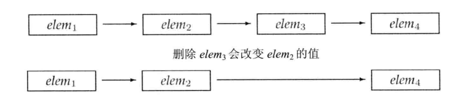

C++ Primer 第 II 部分 C++标准库
目录
- 第 8 章 IO 库
- 第 9 章 顺序容器
- 第 10 章 泛型算法
- 第 11 章 关联容器
- 第 12 章 动态内存
第 8 章 IO 库
8.1 IO 类
| 头文件 | 类型 |
|---|---|
| iostream | istream, wistream 从流读取数据 |
| ostream, wostream 向流先入数据 | |
| iostream, wiostream 读写流 | |
| fstream | ifstream, wifstream 从文件读取数据 |
| ofstream, wofstream 向文件写入数据 | |
| fstream, wfstream 读写文件 | |
| sstream | istringstream, wistringstream 从 string 读取数据 |
| ostringstream, wostringstream 向 string 写入数据 | |
| stringstream, wstringstream 读写 string |
为了支持使用宽字符的语言，标准库定义了一组类型和对象来操作 wchar_t 类型的数据（参见 2.1.1 节）。宽字符版本的类型和函数名字以一个 w 开始。
8.1.1 IO 对象无拷贝或赋值
由于不能拷贝 IO 对象，因此我们也不能将形参或返回类型设置为流类型（参见 6.2.1 节）。进行 IO 操作的函数通常以引用方式传递和返回流。读写一个 IO 对象会改变其状态，因此传递和返回的引用不能是 const 的。
8.1.2 条件状态
IO 操作一个与生俱来的问题是可能发生错误。一些错误是可恢复的，而其他错误则发生在系统深处，已经超出了应用程序可以修正的范围。下表列出了 IO 类所定义的一些函数和标志，可以帮助我们访问和操纵流的 条件状态 。
| strm::iostate | strm 是一种 IO 类型。iostate 是一种机器相关的类型，提供了表达条件状态的完整功能 |
| strm::badbit | strm::badbit 用来指出流已崩溃 |
| strm::failbit | strm::failbit 用来指出一个 IO 操作失败了 |
| strm::eofbit | strm::eofbit 用来指出流到达了文件结束 |
| strm::goodbit | strm::goodbit 用来指出流未处于错误状态。此值保证为零 |
| s.eof() | 若流 s 的 eofbit 置位，则返回 true |
| s.fail() | 若流 s 的 failbit 或 badbit 置位，则返回 true |
| s.bad() | 若流 s 的 badbit 置位，则返回 true |
| s.good() | 若流 s 处于有效状态，则返回 true |
| s.clear() | 若流 s 中所有条件状态复位，将流的状态设置为有效。返回 void |
| s.clear(flags) | 根据给定 flags 标志位，将流 s 中对应条件状态位复位。flags 的类型为 strm::iostate。返回 void |
| s.setstate(flags) | 根据给定 flags 标志位，将流 s 中对应条件状态位复位。flags 的类型为 strm::iostate。返回 void |
| s.rdstate() | 返回流 s 的当前条件状态，返回值类型为 strm::iostate |
一个流一旦发生错误，其上后续的 IO 操作都会失败。只有当一个流处于无错状态时，我们才可以从它读取数据，向它写入数据。由于流可能处于错误状态，因此代码通常应该在使用一个流之前检查它是否处于良好状态。确定一个流对象的状态的最简单的办法时将它当作一个条件来使用：
while (cin >> word) // OK：读操作成功
while 循环检查>>表达式返回的流的状态。如果输入操作成功，流保持有效状态，则条件为真。
查寻流的状态
IO 库定义了一个与机器无关的 iostate 类型，它提供了表达流状态的完整功能。
标准库还定义了一组函数来查寻这些标志位的状态。操作 good 在所有位置错误位均未置位的情况下返回 true，而 bad、fail 和 eof 则在对应错误被位置时返回 true。此外，在 badbit 被置位时，fail 也会返回 true。这意味着，使用 good 或 fail 时确定流的总体状态的正确方法。实际上，我们将流当作条件使用的代码就等价于!fail()。而 eof 和 bad 操作只能表示特定的错误。
8.1.3 管理输出缓冲
每个输出流都管理一个缓冲区，用来保存程序读写的数据。例如，如果执行下面的代码
os << "please enter a value: ";
文本串可能立即大快银出来，但也有可能被操作系统保存在缓冲区中，随后再打印。有了缓冲机制，操作系统就可以将程序的多个输出操作组合成单一的系统级写操作。由于设备的写操作可能很耗时，允许操作系统将多个输出操作组合为单一的设备写操作可以带来很大的性能提升。
导致缓冲刷新（即，数据真正写到输出设备或文件）的原因有很多：
- 程序正常结束，作为 main 函数的 retrun 操作的一部分，缓冲刷新被执行。
- 缓冲区满时，需要刷新缓冲，而后新的数据才能继续写入缓冲区。
- 我们可以使用操作符如 endl 来显式刷新缓冲区
- 在每个输出操作之后，我们可以用操纵符 unitbuf 设置流的内部状态，来清空缓冲区。默认情况下，对 cerr 时设置 unitbuf 的，因此写到 cerr 的内容都是立即率先那的
- 一个输出流可能被关联到另一个流。在这种情况下，当读写被关联的流时，关联到的流的缓冲区会被刷新。例如，默认情况下，cin 和 cerr 都关联到 cout。因此读 cin 或写 cerr 都会导致 cout 的缓冲区被刷新。
刷新输出缓冲区
我们已经使用过操纵符 endl，它完成换行并刷新缓冲区的工作。IO 库中还有两个类似的操纵符：flush 和 ends。flush 刷新缓冲区，但不输出任何额外的字符：ends 向缓冲区插入一个空字符，然后刷新缓冲区。
cout << "hi!" << endl; cout << "hi!" << flush; cout << "hi!" << ends;
unitbuf 操纵符
如果想在每次输出操作后都刷新缓冲区，我们可以使用 unitbuf 操纵符。它告诉流在接下来的每次写操作之后都进行一次 flush 操作。而 nounitbuf 操作符则重值流，使其恢复使用正常的系统管理的缓冲区刷新机制：
cout << unitbuf // 任何输出都立即刷新，无缓冲 count << nounitbuf
警告：如果程序崩溃，输出缓冲区不会被刷新
如果程序异常终止，输出缓冲区是不会被刷新的。当一个程序崩溃后，它所输出的数据很可能停留在输出缓冲区中等待打印。
当调试一个已经崩溃的程序时，需要确认那些你认为已经输出的数据确实已经刷新了。否则，可能将大量的时间浪费在追踪代码为什么没有执行上，而实际上代码已经执行了，只是程序崩溃后缓冲区没有被刷新，输出数据被挂起没有打印而已。
关联输入和输出流
交互式系统通常应该关联输入流和输出流。这意味着所有输出，包括用户提示信息，都会在读取操作之前被打印出来。
tie 有两个重载的版本：一个版本不带参数，返回指向输出流的指针。如果本对象当前关联到一个输出流，则返回的就是指向这个流的指针，如果对象未关联到流，则返回空指针。tie 的第二个版本接受一个指向 ostream 的指针。即，x.tie(&o)将流 x 关掉到输出流 o。
每个流同时最多关联一个流，但多个流可以同时关联到同一个 ostream。
8.2 文件输入输出
ifstream、ofstream 以及 fstream 提供的操作与我们之前已经使用过的 cin 和 cout 操作一样。特别是，我们可以用 IO 运算符（ << 和 >> ）来读写文件，可以用 getline 从 ifstream 读取数据，包括 8.1 节中介绍的内容也都适用于这些类型。
| fstream fstrm; | 创建一个未绑定的文件流。fstream 是头文件 fstream 中定义的一个类型 |
| fstream fstrm(s); | 创建一个 fstream，并打开名为 s 的文件。s可以是 string 类型，或者是一个指向 C 风格的字符串的指针。 |
| 这些构造函数都是 explicit 的。默认的问键模式 mode 依赖于 fstream 的类型 | |
| fstream fstrm(s, mode); | 与前一个构造函数类型，但按执行 mode 打开文件 |
| fstrm.open(s) | 打开名为 s 的文件，并将文件与 fstrm 绑定。s可以是一个 string 或指向 C 风格字符串的指针。默认的文件 mode 依赖于 fstream 的类型。返回 void |
| fstrm.close() | 关闭与 fstrm 绑定的文件。返回 void |
| fstrm.is_open() | 返回一个 bool 值，指出与 fstrm 关联的文件是否成功打开且尚未关闭 |
8.2.1 使用文件流对象
创建文件流对象时，我们可以提供文件名（可以选的）。如果提供了一个文件名，则 open 会自动被调用：
ifstream in(ifile); ofstream out;
成员函数 open 和 close
一旦一个文件流已经打开，它就保持与对应文件的关联。实际上，对一个已经打开的文件流调用 open 会失败，并会导致 failbit 被置位。随后的试图使用文件流的操作都会失败。为了将文件流关联到另一个文件，必须首先关闭已经关联的文件。一旦文件成功关闭，我们可以打开新的文件。如果 open 成功，则 open 会设置流的状态，使得 good()为 true。
自动构造和析构
Note：
当一个 fstream 对象被销毁时，close 会被自动调用。
8.2.2 文件模式
每个流都有一个关联的 文件模式 ，用来指出如果使用文件。下表列出了文件模式和它们的含义。
| in | 以读方式打开 |
| out | 以写方式打开 |
| app | 每次写操作前均定位到文件末尾 |
| ate | 打开文件后立即定位到文件末尾 |
| trunc | 截断文件 |
| binary | 以二进制方式进行 IO |
无论用哪种方式打开文件，我们都可以指定文件模式，调用 open 打开文件时也可以，用一个文件名初始化流来隐式打开文件时也可以。指定文件模式有如下限制：
- 只可以对 ofstream 和 fstream 对象设定 out 模式。
- 只可以对 ifstream 和 fstream 对象设定 in 模式。
- 只有当 out 也被设定时才可设定 trunc 模式。
- 只要 trunc 没被设定，就可以设定 app 模式。在 app 模式下，即是没有显式指定 out 模式，文件也总是以输出方式被打开。
- 默认情况下，即是我们没有指定 trunc，以 out 模式打开的文件也会被截断。为了保留以 out 模式打开的文件的内容，我们必须同时指定 app 模式，这样只会将数据追加写到文件末尾；或者同时指定 in 模式，即打开文件同时进行读写操作。
每个文件流类型读定义了一个默认的文件模式，当我们未指定文件模式时，就使用此默认模式。与 ifstream 关联的文件默认以 in 模式打开；与 ofstream 关联的文件默认以 out 模式打开；与 fstream 关联的文件默认以 in 和 out 模式打开。
以 out 模式打开文件会丢失已有数据
默认情况下，当我们打开一个 ofstream 时，文件的内容会被丢弃。阻止一个 ofstream 清空给定文件内容的方法是同时指定 app 模式：
ofstream app("file2", ofstream::app); // 隐含为输出模式
WARNING：
保留被 ofstream 打开的文件中已有数据的唯一方法是显式指定 app 或 in 模式。
8.3 string 流
| sstream strm; | strm 是一个未绑定的 stringstream 对象。sstream 是头文件 sstream 中定义的一个类型 |
| sstream strm(s); | strm 是一个 sstream 对象，保存 string s 的一个拷贝。此构造函数是 explicit 的 |
| strm.str() | 返回 strm 所保存的 string 的拷贝 |
| strm.str(s) | 将 string s 拷贝到 strm 中。返回 void |
第 9 章 顺序容器
一个容器就是一些特定类型的集合。 顺序容器 为程序员提供了控制元素存储和访问顺序的能力。这种顺序不依赖于元素的值，而是与元素加入容器时的位置相对应。
9.1 顺序容器概述
| vector | 可变大小数组。支持快速随机访问。在尾部之外的位置插入或删除元素可能很慢 |
| deque | 双端队列。支持快速随机访问。在头尾插入/删除速度很快 |
| list | 双向链表。只支持双向顺序访问。在 list 中任何位置进行插入/删除操作速度都很快 |
| forward_list | 单向列表。只支持单向顺序访问。在链表任何位置进行插入/删除操作速度都很快 |
| array | 固定大小数组。支持快速随机访问。不能添加或删除元素 |
| string | 与 vector 相似的容器，但专门用于保存字符。随机访问快。在尾部插入/删除速度快 |
确定使用哪种顺序容器
Tip：
通常，使用 vector 时最好的选择，除非你有很好的理由选择其他容器。
以下是一些选择容器的基本原则：
- 除非你有很多的里有选择其他其容器，否则应该使用 vector。
- 如果你的程序有很多小的元素，且空间的额外开销很重要，则不要使用 list 或 forward_list。
- 如果程序要求随机访问元素，应使用 vector 和 deque。
- 如果程序要求在容器的中间插入或删除元素，应使用 list 或 forward_list。
- 如果程序需要在头尾位置插入或删除元素，但不会在中间位置进行插入或删除操作，则使用 deque。
- 如果程序只有在读取输入时才需要在容器中间位置插入元素，随后需要随机访问元素，则
- 首先，确定是否真的需要在容器中间位置添加元素。当处理输入数据时，通常可以很容易地向 vector 追加数据，然后再调用标准库的 sort 函数来重排容器中的元素，从而避免在中间位置添加元素。
- 如果必须在中间位置插入元素，考虑在输入阶段使用 list，一旦输入完成，将 list 中的内容拷贝到一个 vector 中
如果程序既需要随机访问元素，又需要在容器中间位置插入元素，那该怎么办？答案取决于在 list 或 forward_list 中访问元素与 vector 或 deque 中插入/删除元素的相对性能。一般来说，应用中占主导地方的操作（执行的访问操作更多还是插入/删除更多）决定了容器类型的选择。在此情况下，对两种容器分别测试应用的性能可能就是必要的了。
Best Practices：
如果你不确定应该使用哪种容器，那么可以在程序中只使用 vector 和 list 公共的操作：使用迭代器，不使用下标操作，避免随机访问。这样，在必要时选择使用 vector 或 list 都很方便。
9.2 容器库概览
| 类型别名 | |
| iterator | 此容器类型的迭代器类型 |
| const_iterator | 可以读取元素，但不能修改源的迭代器类型 |
| size_type | 无符号整数类型，足够保存此种容器类型最大可能容器的大小 |
| difference_type | 带符号整数类型，足够保存两个迭代器之间的距离 |
| value_type | 元素类型 |
| reference | 元素的左值类型：与 value_type&含义相同 |
| const_reference | 元素的 const 左值类型（即，const value_type&） |
| 构造函数 | |
| C c; | 默认构造函数，构造孔融其 |
| C c1(c2); | 构造 c2 的拷贝 c1 |
| C c(b, e); | 构造 c，将迭代器 b 和 e 指定的范围内的元素拷贝到 c（array 不支持） |
| C c{a, b, c…} | 列表初始化 c |
| 赋值与 swap | |
| c1 = c2 | 将 c1 种的元素替换为 c2 中元素 |
| c1 = {a, b, c…} | 将 c1 中的元素替换为列表中的元素（不适用于 array） |
| a.swap(b) | 交换 a 和 b 的元素 |
| swap(a, b) | 与 a.swap(b)等价 |
| 大小 | |
| c.size() | c 中元素的数目（不支持 forward_list） |
| c.max_size() | c 可保存的最大元素数据 |
| c.empty() | 若 c 中存储了元素，返回 false，否则返回 true |
| 添加/删除元素 （适用于 array） | |
| 注：在不同容器中，这些操作的接口都不同 | |
| c.insert(args) | 将 args 中的元素拷贝进 c |
| c.emplace(inits) | 使用 inits 构造 c 中的一个元素 |
| c.erase(args) | 删除 args 指定的元素 |
| c.clear() | 删除 c 中的所有元素，返回 void |
| 关系运算符 | |
== ， != |
所有容器都支持相同（不等）运算符 |
| <, <=, >, >= | 关系运算符（无序关联容器不支持） |
| 获取迭代器 | |
| c.begin(), c.end() | 返回指向 c 的首元素和尾元素之后位置的迭代器 |
| c.cbegin(), c.end() | 返回 const_iterator |
| 反向容器的额外成员 （不支持 forward_list） | |
| reverse_iterator | 按逆序寻址元素的迭代器 |
| const_reverse_iterator | 不能修改元素的逆序迭代器 |
| c.rbegin(), c.rend() | 返回指向 c 的尾元素和首元素之前位置的迭代器 |
| c.crbegin(), c.crend() | 返回 const_reverse_iterator |
9.2.4 容器定义和初始化
将一个容器初始化为另一个容器的拷贝
为了创建一个容器为另一个容器的拷贝，两个容器的类型及其元素类型必须匹配。不过，当传递迭代器参数来拷贝一个范围时，就不要求容器类型是相同的了。而且，新容器和原容器中的元素类型也可以不同，只要能将要拷贝的元素转换为要初始化的容器的元素类型即可。
// 每个容器有三个元素，用给定的初始化器进行初始化 list<string> authors = {"Milton", "Shakespeare", "Austen"}; vector<const char*> articles = {"a", "a", "the"}; list<string> list2(authors); // 正确：类型匹配 deque<string> authList(authors); // 错误：容器类型不匹配 vector<string> words(articles); // 错误：容器类型必须匹配 // 正确：可以将const char*元素转换为string forward_list<string> words(articles.begin(), articles.end());
与顺序容器大小相关的构造函数
除了与关联容器相同的构造函数外，顺序容器（array 除外）还提供另一个构造函数，它接受一个容器大小和一个（可选的）元素初始值。如果我们不提供元素初始值，则标准库会创建一个值初始化器：
vector<int> ivec(10, -1); list<string> svec(10, "hi!"); forward_list<int> ivec(10); deque<string> svec(10);
标准库 array 具有固定大小
与内置数组一样，标准库 array 的大小也是类型的一部分。当定一个 array 时，除了指定元素类型，还要真定容器大小：
array<int, 42> // 类型为：保存42个int的数组 array<string, 10> // 类型为：保存10个string的数组
为了使用 array 类型，我们必须同时指定元素类型和大小。
由于大小时 array 类型的一部分，array 不支持普通的容器构造函数。这些构造函数都会确定容器的大喜爱，要么隐式地，要么显式地。而允许用户向一个 array 构造函数传递大小参数，最好情况下也是多余的，而且容器出错。
值得注意的是，虽然我们不能对内置数组类型进行拷贝或对象赋值操作，但 array 无此限制。
int digs[10] = {0,1,2,3,4,5,6,7,8,9}; int cpy[10] = digs; // 错误：内置数组不支持拷贝或赋值 array<int, 10> digits = {0,1,2,3,4,5,6,7,8,9}; array<int, 10> copy = digits; // 正确：只要数组类型匹配即合法
与其他容器一样，array 也要求初始值的类型必须与要创建的容器类型相同。此外 array 要求元素类型和大小也都一样，因为大小时 array 类型的一部分。
9.2.5 赋值和 swap
| c1=c2 | 将 c1 中的元素替换为 c2 中元素的拷贝。c1 和 c2 必须具有相同的类型 |
| c={a,b,c…} | 将 c1 中元素替换为初始化列表中元素的拷贝（array 不适用） |
| swap(c1,c2) | 交换 c1 和 c2 中的元素。c1 和 c2 必须具有相同的类型。swap 通常比从 c2 向 c1 拷贝元素快得多 |
| assign 操作不适用于关联容器和 array | |
| seq.assign(b,e) | 将 seq 中的元素替换为迭代器 b 和 e 所表示的范围中的元素。迭代器 b 和 e 不能指向 seq 中的元素 |
| seq.assign(il) | 将 seq 中的元素替换为初始化列表 il 中的元素 |
| seq.assign(n,t) | 将 seq 中的元素替换为 n 个值为 t 的元素 |
WARNING：
赋值相关运算会导致指向左边容器内部的迭代器、引用和指针失效。而 swap 操作将容器内容交换不会导致指向容器的迭代器、引用和指针失效（容器类型为 array 和 string 的情况除外。
使用 assign（仅顺序容器）
赋值运算符要求左边和右边的运算对象具有相同的类型。它将右边运算对象中所有元素拷贝到左边运算对象中。顺序容器（array 除外）还定义了一个名为 assign 的成员，允许我们从一个不同但相容的类型赋值，或者从容器的子序列赋值。assign 操作用参数所指定的元素（的拷贝）替换左边容器中的所有元素。
使用 swap
Note：
除 array 外，swap 不对任何元素进行拷贝、删除或插入操作，因此可以保证在常数时间内完成。
元素不会被移动的事实意味着，除 string 外，指向容器的迭代器、引用和指针在 swap 操作之后都不会失效。它们仍指向 swap 操作之前所指向的那些元素。但在 swap 之后，这些元素已经属于不同的容器了。与其他容器不同，对一个 string 调用 swap 会导致迭代器、引用和指针失效。
与其他容器不同，swap 两个 array 会真正交换它们的元素。因此，交换两个 array 所需的时间与 array 中元素的数目成正比。
因此，对于 array，在 swap 操作之后，指针、引用和迭代器所绑定的元素保持不变，但元素值已经与另一个 array 中对应元素的值进行了交换。
9.2.7 关系运算符
每个容器类型都支持相等运算符（ == 和 != ）；除了无须关联容器外的所有容器都支持关系运算符（>、>=、<、<=）。关系运算符左右两边的运算对象必须是相同类型的容器，且必须保存相同类型的元素。
比较两个容器实际上是进行元素的逐对比较。这些运算符的工作方式与 string 的关系运算类型：
- 如果两个容器具有相同大小且所有元素都两两对应相等，则这两个容器相等；否则两个容器不等。
- 如果两个容器大小不同，但较小容器中每个元素都等于较大容器的对应元素，则较小容器小于较大容器。
- 如果两个容器都不是另一个容器的前缀子序列，则它们的比较结果取决于第一个不相等的元素的比较结果。
容器的关系运算符使用元素的关系运算符完成比较
容器的相等运算符实际上是使用元素的==运算符实现比较的，而其他关系运算符是使用元素的<运算符。如果元素类型不支持所需运算符，那么保存这种元素的容器就不能使用相等的关系运算。
9.3 顺序容器操作
顺序容器和关联容器的不同之处在于两者组织元素的方式。这些不同指出着接关系到了元素如果存储、访问、添加以及删除。
9.3.1 向顺序容器添加元素
除 array 外，所有标准库容器都提供灵活的内存管理。在运行时可以动态添加或删除元素来改变容器大小。下表列出了向顺序容器（非 array）添加元素的操作。
| 这些操作会改变容器的大小；array 不支持这些操作 | |
| forward_list 有自己转有版本的 insert 和 emplace | |
| forward_list 不支持 push_back 和 emplace_back | |
| vector 和 string 不支持 push_front 和 emplace_front | |
| c.push_back(t) | 在 c 的尾部创建一个值为 t 或由 args 创建的元素。返回 void |
| c.emplace_back(args) | |
| c.push_front(t) | 在 c 的头部创建一个值为 t 或由 args 创建的元素。返回 void |
| c.emplace_front(args) | |
| c.insert(p,t) | 在迭代器 p 指向的元素之前创建一个值为 t 或由 args 创建的元素。返回指向新添加的元素的迭代器 |
| c.emplace(p,args) | |
| c.insert(p,n,t) | 在迭代器 p 指向的元素之前插入 n 个值为 t 的元素。返回指向新添加的第一个元素的迭代器；若 n 为 0，则返回 p |
| c.insert(p,b,e) | 将迭代器 b 和 e 指定的范围内的元素插入到迭代器 p 指向的元素之前。b和 e 不能指向 c 中的元素。返回指向新添加的第一个元素的迭代器；若范围为空，则返回 p |
| c.insert(p,il) | il 是一个花括号包围的元素值列表。将这些给定值插入到迭代器 p 指向的元素之前。返回指向新添加的第一个元素的迭代器；若列表为空，则返回 p |
WARNING：
向 vector、string 或 deque 插入元素会使所有指向容器的迭代器、引用和指针失效。
关键概念：容器元素是拷贝
当我们用一个对象来初始化容器时，或将一个对象插入到容器中时，实际上放入到容器中的是对象值的一个拷贝，而不是对象本身。就像我们将一个对象传递给非引用参数一样，容器中的元素与提供值的对象之间没有任何关系。随后对容器中的元素的任何改变都不会影响到原始对象，反之亦然。
在容器中的特定位置添加元素
WARNING：
将元素插入到 vector、deque 和 string 中的任何位置都是合法的。然而，这样做可能很耗时。
插入范围内元素
新标准下，接受元素个数或范围 insert 版本返回指向第一个新加入元素的迭代器。（在旧版本的标准库中，这些操作返回 void）。如果范围为空，不插入任何元素，insert 操作会将第一个参数返回。
使用 insert 的返回值
通过使用 insert 的返回值，可以在容器中一个特定位置反复插入元素：
list<string> lst; auto iter = lst.begin(); while (cin >> word) iter = iter.insert(iter, word); // 等价于调用push_front
使用 emplace 操作
新标准引入了三个新成员——emplace_front、emplace 和 emplace_back，这些操作构造而不是拷贝元素。这些操作分别对应 push_front、insert 和 push_back，允许我们将元素防止在容器头部、一个指定位置之前或容器尾部。
当我们调用一个 emplace 成员函数时，则是将参数传递给元素类型的构造函数。emplace 成员使用这些参数在容器管理的内存空间中直接构造元素。例如，假定 c 保存 Sales_data（参见 7.1.4 节）元素：
// 在c的末尾构造一个Sales_data对象 // 使用三个参数的Sales_data构造函数 c.emplace_back("978-0590353403", 25, 15.99); // 错误：没有接受三个参数的push_back版本 c.push_back("978-0590353403", 25, 15.99); // 正确：创建一个临时的Sales_data对象传递给push_back c.push_back(Sales_data("978-0590353403", 25, 15.99));
其中对 emplace_back 的调用和第二个 push_back 调用都会创建新的 Sales_data 对象。在调用 emplace_back 时，会在容器管理的内存空间中直接创建对象。而调用 push_back 则会创建一个局部临时对象，并将其压入容器中。
Note：
emplace 函数在容器中直接构造元素。传递给 emplace 函数的参数必须与元素类型的构造函数相匹配。
9.3.2 访问元素
| at 和下表操作只适用于 string、vecotr、deque 和 array。 | |
| back 不适用于 forward_list。 | |
| c.back() | 返回 c 中尾元素的引用。若 c 为空，函数行为未定义 |
| c.front() | 返回 c 中首元素的引用。若 c 为空，函数行为未定义 |
| c[n] | 返回 c 中下标为 n 的元素的引用，n时一个无符号整数。若 n>=c.size()，则函数行为未定义 |
| c.at(n) | 返回下标未 n 的元素的引用。如果下标越界，则抛出一 out_of_range 异常 |
WARNING：
对一个空容器调用 front 和 back，就像使用一个越界的下标一样，是一种验证的程序设计错误。
访问成员函数返回的时引用
在容器中访问元素的成员函数（即，front、back、下标和 at）返回的都是引用。
if (!c.empty()) { c.front() = 42; // 将42赋予c中的第一个元素 auto &v = c.back(); // 获得指向最后一个元素的引用 v = 1024; // 改变c中的元素 auto v2 = c.back(); // v2不是一个引用，它是c.back()的一个拷贝 v2 = 0; // 未改变c中的元素 }
下标操作和安全的随机访问
提供快速随机访问的容器（string、vector、deque 和 array）也都提供下标运算符。
如果我们希望确保下标时合法的，可以使用 at 成员函数。at 成员函数类似下标运算符，但如果下标越界，at 会抛出一个 out_of_range 异常。
9.3.3 删除元素
| 这些操作会改变容器的大小，所以不适用于 array。 | |
| forward_list 有特殊版本的 erase，参见 9.3.4 节 | |
| forward_list 不支持 pop_back；vector 和 string 不支持 pop_front | |
| c.pop_back() | 删除 c 中尾元素。若 c 为空，则函数行为未定义。函数返回 void |
| c.pop_front() | 删除 c 中首元素。若 c 为空，则函数行为未定义。函数返回 void |
| c.erase(p) | 删除迭代器 p 所指定的元素，返回一个指向被删元素之后元素的迭代器，若 p 指向尾元素，则返回尾后（off-the-end）迭代器。若 p 时尾后迭代器，则函数行为未定义 |
| c.erase(b,e) | 删除迭代器 b 和 e 所指定范围内的元素。返回一个指向最后一个被删元素之后元素的迭代器，若 e 本身就是尾后迭代器，则函数也返回尾后迭代器 |
| c.clear() | 删除 c 中的所有元素。返回 void |
WARNING：
删除 deque 中除首尾之外的任何元素都会使所有迭代器、引用和指针失效。指向 vector 和 string 中删除点之后位置的迭代器、引用和指针都会失效。
WARNING：
删除元素的成员函数并不检查其参数。在删除元素之前，程序员必须确保它（们）是存在的。
9.3.4 特殊的 forward_list 操作

当添加或删除一个元素时，删除或添加的元素之前的那个元素的后继会发生改变。为了添加或删除一个元素，我们需要添加其前驱，以便改变前驱的链接。单是，forward_list 是单向链表。在一个单向链表中，没有简单的方法来获取一个元素的前驱。出于这个原因，在一个 forward_list 中添加或删除元素的操作是通过改变给定元素之后的元素来完成的。这样，我们总是可以访问被添加或删除操作所影响的元素。
首前 迭代器允许我们在链表首元素之前并不存在的元素“之后”添加或删除元素（亦即在链表首元素之前添加删除元素）。
| lst.before_begin() | 返回指向链表首元素之前的元素迭代器。此迭代器不能解引用。 |
| lst.cbefore_begin() | cbefore_begin()返回一个 const_iterator |
| lst.insert_after(p,t) | 在迭代器 p 之后的位置插入元素。t是一个对象，n是数量，b和 e 是表示范围的一对迭代器（b和 e 不能指向 lst 内），il 是一个花括号列表。 |
| lst.insert_after(p,n,t) | 返回一个指向最后一个插入元素的迭代器。如果范围为空，则返回 p。若 p 为尾后迭代器，则函数行为未定义 |
| lst.insert_after(p,b,e) | |
| lst.insert_after(p,il) | |
| emplace_after(p,args) | 使用 args 在 p 指定的位置之后创建一个元素。返回一个指向这个新元素的迭代器。若 p 为尾后迭代器，则函数行为未定义 |
| lst.erase_after(p) | 删除 p 指向的位置之后的元素，或删除从 b 之后直到但不包含）e之间的元素。 |
| lst.erase_after(b,e) | 返回一个指向被删元素之后元素的迭代器，若不存在这样的元素，则返回尾后迭代器。如果 p 指向 lst 的尾元素或者一个尾后迭代器，则函数未定义 |
9.3.5 改变容器大小
| resize 不适用于 array | |
| c.resize(n) | 调整 c 的大小为 n 个元素。若 n<c.size()，则多出的元素被丢弃。若必须添加新元素，对新元素进行值初始化 |
| c.resize(n,t) | 调整 c 的大小为 n 个元素。任何新添加的元素都初始化为值 t |
WARNING：
如果 resize 缩小容器，则指向被删除元素迭代器、引用和指针都会失效；对 vector、string 或 deque 进行 resize 可能导致迭代器、指针和引用失效。
9.3.6 容器操作可能使迭代器失效
在向容器添加元素后：
- 如果容器是 vector 或 string，且存储空间被重新分配，则指向容器的迭代器、指针和引用都会失效。如果存储空间未重新分配，指向插入位置之前的元素的迭代器、指针和引用仍有效，但指向插入位置之后元素的迭代器、指针和引用将会失效。
- 对于 deque，插入到除首尾位置之外的任何位置都会导致迭代器、指针和引用失效。如果在首尾位置添加元素，迭代器会失效，但指向存在的元素的引用和指针不会失效。
- 对于 list 和 forward_list，指向容器的迭代器（包括尾后迭代器和首前迭代器）、指针和引用仍有效。
当我们从一个容器中删除元素后，指向被删除元素的迭代器、指针和引用会失效，这应该不会令人惊讶。毕竟，这些元素都已经被销毁了。当我们删除一个元素后：
- 对于 list 和 forward_list，指向容器其他位置的迭代器（包或尾后迭代器和首前迭代器）、引用和指针仍有效。
- 对于 deque，如果在首尾之外的任何位置删除元素，那么指向被删除元素外其他元素的迭代器、引用或指针也会失效。如果是删除 deque 的尾元素，则尾后迭代器也会失效，但其他前迭代器、引用和指针不受影响；如果是删除首元素，这些也不会受影响。
- 对于 vector 和 string，指向被删除元素之前的迭代器、引用和指针仍有效。注意：我们删除元素时，尾后迭代器总是会失效。
建议：管理迭代器
当你使用迭代器（或指向容器元素的引用或指针）时，最小化要求迭代器必须保持有效的程序片段是一个好的方法。
由于向迭代器添加元素和从迭代器删除元素的代码可能会使迭代器失效，因此必须保证每次改变容器的操作之后都正确当地重新定位迭代器。这个建议对 vector、string 和 deque 尤为有效。
不要保存 end 返回的迭代器
Tip：
如果在一个循环中插入/删除 deque、string 或 vector 中的元素，不要缓存 end 返回的迭代器。
9.4 vector 对象是如何增长的
为了支持快速随机访问，vector 将元素连续存储——每个元素紧挨着前一个元素存储。通常情况下，我们不必关系一个标准库类型是如何实现的，而只需要关系它如何使用。然而，对于 vector 和 string，其部分实现渗透到了接口中。
假定容器中元素是连续存储的，且容器的大小是可变的，考虑向 vector 或 string 中添加元素会发生什么；如果没有空间容纳新元素，容器不可能简单地将它添加到内存中其他位置——因为元素必须连续存储。容器必须分配新的内存空间来保存已有元素和新元素，将已有元素从旧位置移动到新空间中，然后添加新元素，释放旧存储空间。如果我们每添加一个新元素，vector 就执行一次这样的内存分配和释放操作，性能会慢到不可接受。
为了避免这种代价，标准库实现者采用了可以减少容器空间重新分配次数的策略。当不得不获取新的内存空间时，vector 和 string 的实现通常会分配比新的空间需求更大的内存空间。容器预留这些空间作为备用，可用来保存更多的新元素。这样，就不需要每次添加新元素都重新分配容器的内存空间了。
这种分配策略比每次添加元素都重新分配容器内存空间的策略要高效得多。其实际性能也表现得足够好——虽然 vector 在每次重新分配内存空间时都要移动所有元素，但使用此策略后，其扩张操作通常比 list 和 dqeue 还要快。
管理容量的成员函数
| shrink_to_fit 只适用于 vector、string 和 deque。 | |
| capacity 和 reserve 只适用于 vector 和 string。 | |
| c.shrink_to_fit() | 请将 capacity()减少为与 size()相同大小 |
| c.capacity() | 不重新分配内存空间的话，c可以保存多少元素 |
| c.reserve(n) | 分配至少能容纳 n 个元素的内存空间 |
Note：
reserve 并不改变容器中元素的数量，它仅影响 vector 预先分配多大的内存空间
只有当需要的内存空间超过当前容量时，reserve 调用才会改变 vector 的容量。如果需求大小大于当前容量，reserve 至少分配与需求一样大的内存空间（可能更大）。
如果需求大小小于或等于当前容量，reserve 什么也不做。特别时，当需求大小小于当前容量时，容器不会退回内存空间。因此，在调用 reserve 之后，capacity 将会大于等于传递给 reserve 的参数。
9.5 额外的 string 操作
9.5.1 构造 string 的其他方法
| n、len2 和 pos2 都是无符号值 | |
| string s(cp, n) | s 时 cp 指向的数组中前 n 个字符的拷贝。此数足至少应该包含 n 个字符 |
| string s(s2,pos2) | s 时 string s2 从下标 pos2 开始的字符串的拷贝。若 pos2>s2.size()，构造函数的行为未定义 |
| string s(s2,pos2,len2) | s 是 string s2 从下标 pos2 开始 len2 个字符的拷贝。若 pos2>s2.size()，构造函数的行为未定义。不管 len2 的值是多少，构造函数至多拷贝 s2.size()-pos2 个字符 |
通常当我们从一个 const char*创建 string 时，指针指向的数组必须以空字符串结尾，拷贝操作遇到空字符时停止。
substr 操作
| s.substr(pos,n) | 返回一个 string，包含 s 中从 pos 开始的那个字符的拷贝、pos 的默认值为 0。即拷贝从 pos 开始的所有字符 |
9.5.2 改变 string 的其他方法
| s.insert(pos,args) | 在 pos 之前插入 args 指定的字符，pos 可以是一个下标或一个迭代器。接受下标的版本返回一个指向 s 的引用；接受迭代器的版本返回指向第一个插入字符的迭代器 |
| s.erase(pos,len) | 删除从位置 pos 开始的 len 个字符。如果 len 被省略，则删除从 pos 开始直接 s 末尾的所有字符。返回一个指向 s 的引用 |
| s.assign(args) | 将 s 中的字符替换为 args 指定的字符。返回一个指向 s 的引用 |
| s.append(args) | 将 args 追加到 s。返回一个指向 s 的引用 |
| s.replace(range,args) | 删除 s 中范围 range 内的字符，替换为 args 指定的字符。range 或者是一个下标和一个长度，或者是一对指向 s 的迭代器。返回一个指向 s 的引用 |
| args 可以是下列形式之一；append 和 assign 可以使用所有形式 | |
| str 不能与 s 相同，迭代器 b 和 e 不能指向 s | |
| str | 字符串 str |
| str,pos,len | str 从 pos 开始最多 len 个字 |
| cp,len | 从 cp 指向的字符数组的前（最多）len 个字符 |
| cp | cp 指向的以空字符结尾的字符数据 |
| n,c | n 个字符 c |
| b,e | 迭代器 b 和 e 指定的范围内的字符 |
| 初始化列表 | 花括号包围的，以逗号分隔的字符列表 |
9.5.3 string 搜索操作
string 类每个搜索操作都返回一个 string::size_type 值，表示匹配发生位置的下标。如果搜索失败，则返回一个名为 string::npos 和 static 成员。标准库将 npos 定义为一个 const string::size_type 类型，并初始化为-1.由于 npos 是一个 unsigned 类型，此初始值意味着 npos 等于任何 string 最大的可能大小。
WARNING：
string 搜索函数返回 string::size_type 值，该类型是一个 unsigned 类型。因此用一个 int 或其他带符号类型来保存这些函数的返回值不是一个好注意。
| 搜索操作返回指定字符差与显的下标，如果未找到噢啊则返回 npos | |
| s.find(args) | 查找 s 中 args 第一次出现的位置 |
| s.rfind(args) | 查找 s 中 args 最后一次出现的位置 |
| s.find_first_of(args) | 在 s 中查找 args 中任何一个字符第一次出现的位置 |
| s.find_last_of(args) | 在 s 中查找 args 中任何一个字符最后一次出现的位置 |
| s.find_first_not_of(args) | 在 s 中查找第一个不在 args 中的字符 |
| s.find_last_not_of(args) | 在 s 中查找最后一个不在 args 中的字符 |
| args 必须是以下形式之一 | |
| c.pos | 从 s 中位置 pos 开始查找字符 c，pos 默认未 0 |
| s2,pos | 从 s 中位置 pos 开始查找字符串 s2，pos 默认为 0 |
| cp,pos | 从 s 中位置 pos 开始查找指针 cp 指向的以空字符串结尾的 C 风格字符串 |
| cp,pos,n | 从 s 中位置 pos 开始查找指针 cp 指向的数组的前 n 个字符，pos 和 n 无默认值 |
9.5.4 compare 函数
| s2 | 比较 s 和 s2 |
| pos1,n1,s2 | 将 s 中从 pos1 开始的 n1 个字符与 s2 进行比较 |
| pos1,n1,s2,pos2,n2 | 将 s 中从 pos1 开始的 n1 个字符与 s2 中从 pos2 开始的 n2 个字符进行比较 |
| cp | 比较 s 与 cp 指向的以空字符结尾的字符数组 |
| pos1,n1,cp | 将 s 中从 pos1 开始的 n1 个字符与 cp 指向的以空字符串结尾的字符数组进行比较 |
| pos1,n1,cp,n2 | 将 s 中从 pos1 开始的 n1 个字符与指针 cp 指向的地址开始的 n2 个字符进行比较 |
9.5.5 数值转换
Note：
如果 string 不能转换为一个数值，这些函数抛出一个 invalid_argument 异常。如果转换得到的数值无法用任何类型来表示，则抛出一个 out_of_range 异常。
| to_string(val) | 一组重载函数，返回数值 val 的 string 表示。val 可以是任何算术类型。 |
| 对每个负电类型和 int 或更大的整型，都有相应版本的 to_string。与往常一样，小整形会被提升 | |
| stoi(s, p, b) | 返回 s 的起始子串（表示整数内容）的数值，返回值类型分别是 int、long、unsigned long、long long、unsigned long long。 |
| stol(s, p, b) | b 表示转换所用的基数，默认值为 10，。p是 size_t 指针，用来保存 s 中第一个非数值字符的下标，p默认为 0，即，函数不保存下标 |
| stoul(s, p, b) | |
| stoll(s, p, b) | |
| stoull(s, p, b) | |
| stof(s. p) | 返回 s 的起始子串（表示浮点数内容）的数据，返回值类型分别是 float、double 或 long double。 |
| stod(s, p) | 参数 p 的作用与整数转换函数中的一样 |
| stold(s, p) |
9.6 容器适配器
除了顺序容器外，标准库还定义了三个顺序容器适配器：stack、queue 和 priority_queue。 适配器 是标准库中的一个通用概念。容器、迭代器和函数都有适配器。本质上，一个适配器是一种机制，能使某种事物的行为看起来像另外一种事物一样。一个容器适配器接受一种已有的容器类型，使其行为看起来像一种不同的类型。例如，stack 适配器接受一个顺序容器，并使其操作起来像 stack 一样。
| size_type | 一种类型，足以保存当前类型的最大对象的大小 |
| value_type | 元素类型 |
| container_type | 实现适配器的底层容器类型 |
| A a; | 创建一个名为 a 的空适配器 |
| A a(c); | 创建一个名为 a 的适配器，带有容器 c 的一个拷贝 |
| 关系运算符 | 每个适配器都支持所有关系运算符：==、!=、<、<=、>和>= |
| 这些运算符返回底层容器的比较结果 | |
| a.empty() | 若 a 包含任何元素，返回 false，否额发安徽 true |
| a.size() | 返回 a 中的元素数目 |
| swap(a,b) | 交换 a 和 b 的内容，a和 b 必须有相同的类型，包括底层容器也必须相同 |
| a.swap(b) |
对于一个给定的适配器，可以使用哪些容器是有限制的。所有适配器都要求容器具有添加和删除元素的能力。因此，适配器不能构造在 array 之上。类似的，我们也不能用 forward_list 来构造适配器，因为所有适配器都要求容器具有添加、删除以及访问尾元素的能力。stack 只要求 push_back、pop_back 和 back 操作，因此可以使用除 array 和 forward_list 之外的任何之外的任何容器类型来构造 stack。queue 适配器要求 back、push_back、front 和 push_front，因此它可以构造于 list 或 deque 之上，但不能基于 vector 构造，priority_queue 除了 front、push_back 和 pop_back 操作之外还要求随机访问能力，因此它可以构造于 vector 或 deque 之上，但不能基于 list 构造。
栈适配器
| 栈默认基于 deque 实现，也可以在 list 或 vector 之上实现 | |
| s.pop() | 删除栈顶元素，但不返回该元素值 |
| s.push(item) | 创建一个新元素压入栈顶，该元素通过拷贝或移动 item 而来，或者由 args 构造 |
| s.emplace(args) | |
| s.top() | 返回栈顶元素，但不将元素弹出栈 |
队列适配器
| queue 默认基于 deque，priority_queue 默认基于 vector 实现； | |
| queue 也可以使用 list 或 vector 实现，priority_queue 也可以用 deque 实现 | |
| q.pop() | 删除 queue 的首元素或 priority_queue 的最高优先级的元素，但不返回此元素 |
| q.front() | 返回首元素或尾元素，但不删除此元素 |
| q.back() | 只适用于 queue |
| q.top() | 返回最高优先级元素，但不删除该元素 |
| 只适用于 priority_queue | |
| q.push(item) | 在 queue 末尾或 priority_queue 中恰当的位置创建有高 ieyuansu，其值为 item，或者由 args 构造 |
| q.emplace(args) |
第 10 章 泛型算法
顺序容器只定义了很少的操作：在多数情况下，我们可以添加和删除元素、访问首尾元素、确定容器是否为空以及获得指向首元素或尾元素之后位置的迭代且。
我们可以向想像用户还希望做其他很多有用的操作：查找特定元素、替换或删除一个特定值、重排元素顺序等。
标准库并未给每个容器都定义成员函数来实现这些操作，而是定义了一组 泛型算法 ：称它们为“算法”，是因为它们实现了一些经典算法的公共接口，如排序和搜索；成它们是”泛型的“，是因为它们可以用于不同类型的元素和多种容器类型（不仅包括标准库类型，如 vector 或 list，还包括内置的数组类型），以及我们将看到的，还能用于其他类型的序列。
10.1 概述
大多数算法都定义在头文件 algorithm 中。标准库还在头文件 numeric 中定义了一组数值泛型算法。
一般情况下，这些算法并不值接操作容器，而是编译由两个迭代器指定的一个元素范围来进行操作。通常情况下，算法遍历范围，对其中每个元素进行一些处理。
10.2 初识泛型算法
10.2.1 只读算法
一些算法只读取其输入范围内的元素，而从不改变元素。find 就是这样的一种反法，count 函数也是。
另一个只读算法是 accumulate，它定义在头文件 numeric 中。accumulate 函数接受三个参数，前两个指出了需要求和的元素的范围，第三个参数是和的初值。
Note：
accumulate 的第三个参数的类型决定了函数中使用哪个加法运算符以及返回值的类型
算法和元素类型
Best Practices：
对于只读取而不改变元素的算法，通常最好使用 cbegin()和 cend()。单是，如果你计划使用算法返回的迭代器来改变元素的值，就需要使用 begin()和 end()的结果作为参数。
操作两个序列的算法
WARNING：
哪些值接受一个单一迭代器来表示第二序列的算法，都假定第二个序列至少与第一个序列一样长。
10.2.2 写容器元素的算法
一些算法将新值赋予序列中的元素。当我们使用这类算法时，必须注意确保序列原大小至少不小于我们要求算法写入的元素数目。及诸，算法不会值形容其操作，因此它们自身不可能改变容器的大小。
一些算法会自己向输入范围写入元素。这些算法本质上并不未显，它们最多写入与给定序列一样多的元素。
关键概念：迭代器参数
一些算法从两个序列中读取元素。构成这两个序列的元素可以来自于不同类型的容器。而且，两个序列中元素的类型也不要求严格匹配。算法要求的只是能够比较两个序列中的元素。
操作两个序列的算法之间的区别在于我们如何传递第二个序列。一些算法，例如 equal，接受三个迭代器：前两个表示第一个序列的范围，第三个表示第二个序列中的首元素。其他算法接受四个迭代器：前两个表示第一个序列的范围，后两个表示第二个序列的范围。
用一个单一迭代器表示第二个序列的算法都假定第二个序列至少与第一个序列一样长。确保算法不会试图访问第二个序列中不存在的元素是程序员的责任。
算法不检查写操作
WARNING：
向亩的位置迭代器写入数据的算法假定目地位置足够大，能容纳要写入的元素。
介绍 back_inserter
一种保证算法有足够元素空间来容纳输出数据的方法是使用插入迭代器。插入迭代器是一种向容器中添加元素的迭代器。通常情况，当我们通过一个迭代器向容器元素赋值时，只被赋予迭代器指向的元素。而当我们通过一个插入迭代器赋值时，一个与赋值号右侧值相等的元素被添加到了容器中。
我们将在 10.4.1 节中详细介绍插入迭代器的内容。单是，为了展示如何用算法写入数据，我们现在将使用 back_inserter ，它是定义在头文件 interator 中的一个函数。
back_inserter 接受一个指向容器的引用，返回一个与该容器绑定的插入迭代器。当我们通过此迭代器赋值时，赋值运算符会调用 push_back 将一个具有给定值的元素添加到容器中
vector<int> vec; // 空向量 auto it = back_inserter(vec); // 通过它赋值会将元素添加到vec中 *it = 42; // vec中现在有一个元素，值为42
我们常常使用 back_inserter 来创建一个迭代器，作为算法的目的位置来使用。
拷贝算法
拷贝算法是另一个向目的位置迭代器指向的输出序列中的元素写入数据的算法。此算法接受三个迭代器，前两个表示一个输入范围，第三个表示目的序列的起始位置。此算法将输入范围中的元素拷贝到目的序列中。
多个算法都提供所谓的“拷贝”版本。这些算法计算新元素的值，但不会将它们防止在输入序列的末尾，而是创建一个新序列保存这些结果。
10.2.3 重排容器元素的算法
WARNING：
标准库算法对迭代器而不是容器进行操作，因此不能（直接）添加或删除元素。
10.3 定制操作
10.3.1 向算法传递函数
谓词
谓词是一个可调用的表达式，其返回结果是一个能用作条件的值。标准库苏阿法所使用的谓词分为两类： 一元谓词 （意味着它们值接受单一参数）和 二元谓词 （意味着它们有两个参数）。接受谓词参数的算法对输入序列中的元素调用谓词。因此，元素类型必须能转换为谓词的参数类型。
10.3.2 lambda 表达式
介绍 lambda 表达式
我们可以向一个算法传递任何类别的 可调用对象 。对于一个对象或一个表达式，如果可以对其使用调用运算符（参见 1.5.2），则称它为可调用的。
到目前为止，我们使用过的仅有的两种可调用对象是函数的函数指针。还有其他两种可调用的对象：重载了函数调用运算符的类，我们将在 14.8 节介绍，以及 lambda 表达式 。
一个 lambda 表达式表示一个可调用的代码单元。我们可以将其理解为一个未命名的内联函数。与任何函数类似，一个 lambda 具有一个返回类型、一个参数列表和一个函数体。但与函数不同，lambda 可能定义在函数内部。一个 lambda 表达式具有如下形式
[capture list](parameter list) -> return type { function body }
其中，capture list（捕获列表）是一个 lambda 所在函数中定义的局部变量的列表（通过为空）；return type、parameter list 和 function body 与任何普通函数一样，分别表示返回类型、参数列表和函数体。但是，与普通函数不同，lambda 必须使用尾置返回来指定返回类型。
我们可以忽略参数列表和返回类型，但必须永远包含捕获列表和函数体
auto f = [] { return 42; };
此列中，我们定义了一个可调用对象 f，它不接受参数，返回 42。
在 lambda 中忽略括号和参数列表等价于指定一个空参数列表。在此例中，当调用 f 时，参数列表是空的。如果忽略返回类型，lambda 根据函数体中的代码推断出返回类型。如果函数体只是一个 return 语句，则返回类型从返回的表达式的类型推断而来，否则返回类型为 void。
Note：
如果 lambda 的函数体包含任何单一 return 语句之外的内容，且未指定返回类型，则返回 void。
向 lambda 传递参数
与一个普通函数调用类型，调用一个 lambda 时给定的实参被用来初始化 lambda 的形参。通常，实参和形参的类型必须匹配。但与普通函数不同，lambda 不能有默认参数。因此，一个 lambda 调用的实参数目永远与形参数目相等。一旦形参初始化完毕，就可以执行函数体了。
使用捕获列表
虽然一个 lambda 可以出现在一个函数中，使用其局部变量，但它只能使用那些明确指明的变量。一个 lambda 通过将局部变量包含在其捕获列表中来指出将会使用这些变量。捕获列表指引 lambda 在其内部包含访问局部变量所需的信息。
[sz](const string &a) { return a.size() > sz; };
Note：
一个 lambda 只有在其捕获列表中捕获一个它所在函数中的局部变量，才能在函数体中使用该变量。
Note：
捕获列表只有用于局部非 static 变量，lambda 可以值接使用局部 static 变量和它所在函数之外声明的名字。
10.3.3 lambda 捕获和返回
当定义一个 lambda 时，编译器生成一个与 lambda 对应的新的（未命名的）类类型。我们将在 14.8.1 节介绍这种类时如何生成的。目前，可以这样理解，当向一个函数传递一个 lambda 时，同时定义一个新类型和该类型的一个对象；传递的参数就是此编译器生成的类类型的未命名对象。类似的，当使用 auto 定义一个 lambda 初始化的变量时，定义了一个从 lambda 生成的类型的对象。
默认情况下，从 lambda 生成的类都包含一个对应该 lambda 所捕获的变量的数据成员。类似任何普通类的数据成员，lambda 的数据成员也在 lambda 对象创建时被初始化。
值捕获
类似参数传递，变量捕获的方式也可以是值或引用。与传值参数类型，采用值捕获的前提是变量可以拷贝。与参数不同，被捕获的变量的值在 lambda 创建时拷贝，而不是调用时拷贝：
void fcn1 { size_t v1 = 42; // 局部变量 // 将v1拷贝到名为f的可调用对象 auto f = [v1] { return v1; }; v1 = 0; auto j = f(); // j为42；f保存了我们创建它时v1的拷贝 }
由于被捕获变量的值是在 lambda 创建时拷贝，因此随后对其修改不会影响到 lambda 内对应的值。
引用捕获
void fcn2 { size_t v1 = 42; // 局部变量 // 对象f2包含v1的引用 auto f2 = [&v1] { return v1; }; v1 = 0; auto j = f2(); // j为0；f保存v1的引用，而非拷贝 }
引用捕获与返回引用有着相同的问题和限制。如果我们采用引用方式捕获一个变量，就必须确保被引用的对象在 lambda 执行的时候是存在的。lambda 捕获的都是局部变量，这些变量在函数结果后就不复存在了。如果 lambda 可能在函数结束后执行，捕获的引用指向的局部变量已经消失。
我们也可以从一个函数返回 lambda。函数可以值接返回一个可调用对象，或者返回一个类对象，该类含有可调用对象的数据成员。如果函数返回一个 lambda，则与函数不能返回一个局部变量的引用类型四，此 lambda 也不能包含引用捕获。
当以引用方式捕获一个变量时，必须保证在 lambda 执行时变量是存在的。
隐式捕获
除了显式列出我们希望使用的来自所在函数的变量之外，还可以让编译器根据 lambda 体种的代码来推断我们要使用哪些变量。为了指示编译器推断捕获列表，应在捕获列表种写一个&或=。&告诉编译器采用捕获引用方式，=则表示采用值捕获方式。
如果我们希望对一部分变量采用值捕获，对其他变量采用引用捕获，可以混合使用隐式捕获和显式捕获。
当我们混合使用隐式捕获和显式捕获时，捕获列表种的第一个元素必须时一个&或=。此符号执行默认捕获方式为引用或值。
当混合使用隐式捕获和显式捕获时，显式捕获的变量必须使用与隐式捕获不同的方式。即，如果隐式捕获是引用方式（使用了&），则显式捕获命名变量必须采用值方式，因此不能在其名字前使用&。类型的，如果隐式捕获采用的值方式（使用了=），则显式捕获命名变量必须采用引用方式，即，在名字前使用&。
| [] | 空捕获列表。lambda 不能使用所在函数种的变量。一个 lambda 只有捕获变量后才能使用它们 |
| [names] | names 是一个逗号分隔的名字列表，这些名字都是 lambda 所在函数的局部变量。默认情况下，捕获列表种的变量都被拷贝。名字前如果使用了&，则采用引用捕获方式 |
| [&] | 隐式捕获列表，采用引用捕获方式。lambda 体中所使用的来自所在函数的实体都采用引用方式使用 |
| [=] | 隐式捕获列表，采用值捕获方式。lambda 体将拷所使用的来自所在函数的实体的值 |
| [&, identifier_list] | identifier_list 是一个逗号分隔的列表，包含 0 个或多个来自所在函数的变量。这些变量采用值捕获方式，而任何隐式捕获的变量都采用引用方式捕获。identifier_list 中的名字钱明不能使用& |
| [=, identifier_list] | identifier_list 中的变量都采用引用方式捕获，而任何隐式捕获的变量都采用值方式捕获。identifier_list 中的名字不能包括 this，且这些名字之前必须使用& |
可变 lambda
默认情况下，对于一个值被拷贝的变量，lambda 不会改变其值。如果我们希望能改变一个被捕获的变量的值，就必须在参数列表首加上关键字 mutable。因此可变 lambda 能省略参数列表：
void fcn3() { size_t v1 = 42; // 局部变量 // f可以改变它所捕获的变量的值 auto f = [v1] () mutable { return ++v1; } ; v1 = 0; auto j = f(); // j为42 }
指定 lambda 返回类型
当我们需要为一个 lambda 定义返回类型时，必须使用尾置返回类型。
10.3.4 参数绑定
对于哪种只在一两个地方使用的简单操作，lambda 表达式是最有用的。如果我们需要在很多地方使用相同的操作，通常应该定义一个函数，而不是多次编写相同的 lambda 表达式。类似的，如果一个操作需要很多语句才能完成，通常使用函数更好。
标准库 bind 函数
可以将 bind 函数看作一个通用的函数适配器（参见 9.6 节），它接受一个可调用对象，生成一个新的可调用对象来“适应”原对象的参数列表。bind 定义在头文件 functional 中。
调用 bind 的一般形式为：
auto newCallable = bind(callable, arg_list);
其中，newCallable 本身是一个可调用对象，arg_list 是一个逗号分隔的参数列表，对应给定的 callable 的参数。即，当我们调用 newCallable 时，newCallable 会调用 callable，并传递给它 arg_list 中的参数。
arg_list 中的参数可能包含形如_n 的名字，其中 n 是一个整数。这些参数是“占位符”，表示 newCallable 的参数，他们占据了传递给 newCallable 的参数的“位置”。数值 n 表示生成的可调用对象中参数的位置：_1 为 newCallable 的第一个参数，_2 为第二个参数，依次类推。
使用 placeholders 名字
名字_n 都定义在一个名为 placeholders 的命名空间中，而这个命名空间本身定义在 std 命名空间值中。为了使用这些名字，两个命名空间都要写上。与我们的其他例子类似，对 bind 的调用代码假定之前已经适当地使用了 using 声明，例如，_1 对应的 using 声明为：
using std::placeholders::_1;
对每个占位符名字，我们都必须提供一个单独的 using 声明。编写这样的声明很烦人，也很容易出错。可以使用另外一种不同形式的 using 语句（详细内容在 18.2.2 节中介绍），而不是分别声明每个占位符。如下所示：
using namespace namespace_name;
这种形式说明希望所有来自 namespace_name 的名字都可以在我们的程序中直接使用。
bind 的参数
如前文所述，我们可以用 bind 修正参数的值。更一般的，可以用 bind 绑定给定可调用对象中的参数或重新安排其顺序。例如，假定 f 是一个可调用对象，它有 5 个此哪哈苏，则下面对 bind 的调用：
// g是一个有两个参数的可调用对象 auto g = bind(f, a, b, _2, c, _1);
生成一个信的可调用对象，它有两个参数，分别用占用符_2 和_1 表示。这个新的可调用对象将他自己的参数作为第三个和第五个参数传递给 f。f 的第一个、第二个和第四个参数分别绑定到给定的值 a、b 和 c 上。
传递给 g 的参数按位置绑定到占位符。即，第个参数绑定到_1，第二个参数绑定到_2，当我们调用 g 时，其第一个参数将被传递给 f 作为最后一个参数，第二个参数将被传递给 f 作为第三个参数。实际上，这个 bind 调用会将
g(_1, _2)
映射为
f(a, b, _2, c, _2)
即，对 g 的调用会调用 f，用 g 的参数代替占位符，再加上绑定参数 a、b 和 c。例如，调用 g(X,Y)会调用
f(a, b, Y, c, X)
绑定引用参数
默认情况下，bind 的那些不是占位符的参数被拷贝到 bind 返回的可调用对象中。单是，与 lambda 类似，有时对有些绑定的参数我们希望以引用方式传递，或者要绑定参数的类型无法拷贝。例如：
// os是一个局部变量，引用一个输出流 // c是一个局部变量，类型为char ostream &print(ostream &os, const string &s, char c) { return os << s << c; } // 错误：不能拷贝os for_each(words.begin(), words.end(), bind(print, os, _1, '' ));
如果我们希望传递给 bind 一个对象而又不拷贝它，就必须使用标准库 ref 函数：
for_each(words.begin(), words.end(),
bind(print, ref(os), _1, ' '));
函数 ref 返回一个对象，包含给定的引用，此对象是可以拷贝的。标准库中还有一个 cref 函数，生成一个保存 const 引用的类。与 bind 一样，函数 ref 和 cref 也定义在头文件 functional 中。
10.4 再探迭代器
除了为每个容器定义的迭代器之外，标准库在头文件 iterator 中还定义了额外几种迭代器。这些迭代器包括以下几种：
- 插入迭代器 ：这些迭代器被绑定到一个容器上，可用来向容器插入元素。
- 流迭代器 ：这些迭代器被绑定到输入或输出流上，可用来遍历所关联的 IO 流。
- 反向迭代器 ：这些迭代器向后而不是向前移动。除了 forward_list 之外的标准库容器都有反向迭代器。
- 移动迭代器 ：这些专用的迭代器不是拷贝其中的元素，而是移动它们。我们将在 13.6.2 节介绍移动迭代器。
10.4.1 插入迭代器
插入器是一种适配器（参见 9.6 节），它接受一个容器，生成一个迭代器，能实现向给定容器添加元素。当我们通过一个插入迭代器进行赋值时，该迭代器调用容器操作来想给定容器的指定位置插入一个元素。
| it=t | 在 it 指定的当前位置插入值 t。假定 c 是 it 绑定的容器，依赖于插入迭代器的不同种类，此赋值会分别调用 c.push_back(t)、c.push_front(t)或 c.insert(t,p)，其中 p 为传递给 inserter 的迭代器位置 |
| *it,++it,it++ | 这些操作虽然存在，但不会 it 做任何事情。每个操作都返回 it |
插入器有三种类型，差异再与元素插入的位置：
- back_inserter 创建一个使用 push_back 的迭代器
- front_inserter 创建一个使用 push_front 的迭代器
- inserter 创建一个使用 insert 的迭代器。此函数接受第二个参数，这个参数必须是一个指向给定容器的迭代器。元素将被插入到给定迭代器所表示的元素之前。
Note：
只有在容器支持 push_front 的情况下，我们才可以使用 front_inserter。类似的，只有在容器支持 push_back 的情况下，我们才能使用 back_inserter。
10.4.2 iostream 迭代器
虽然 iostream 类型不是容器，但标准库定义了可以用于这些 IO 类型对象的迭代器。 istream_iterator 读取输入流， ostream_iterator 向一个输出流写数据。这些迭代器将它们对应的流当作一个特定类型的元素序列来处理。通过使用流迭代器，我们可以用泛型算法从流对象读取数据已经向其写入数据。
istream_iterator 操作
当创建一个流迭代器时，必须指定迭代器将要读写的对象类型。一个 istream_iterator 使用>>来读取流。因此，istream_iterator 要读取的类型必须定义了输入运算符。当创建一个 istream_iterator 时，我们可以将它绑定到一个流。当然，我们还可以默认初始化迭代器，这样就创建了一个可以当作尾后值使用的迭代器。
istream_iterator<int> int_it(cin); // 从cin读取int istream_iterator<int> int_eof; // 尾后迭代器 ifstream in("afile"); istream_iterator<string> str_it(in); // 从"afile"读取字符串
下面时一个用 istream_iterator 从标准输入读取数据，存入一个 vector 的例子：
istream_iterator<int> in_iter(cin); // 从cin读取int istream_iterator<int> eof; // istream尾后迭代器 while (in_iter != eof) // 先后置递增，再解引用 vec.push_back(*in_iter++);
| istream_iterator<T> in(is); | in 从输入流 is 读取类型为 T 的值 |
| istream_iterator<T> end; | 读取类型为 T 的值的 istream_iterator 迭代器，表示尾后位置 |
| in1 == in2 | in1 和 in2 必须读取相同类型。如果它们都是尾后迭代器，或绑定到相同的输入，则两者相等 |
| in1 != in2 | |
| *in | 返回从流中读取的值 |
| in->mem | 与(*in).mem 的含义相同 |
++in, in++ |
使用元素类型所定义的>>运算符从输入流读取下一个值。与以往一样，前置版本返回一个指向递增后迭代器的引用，后置版本返回旧值 |
istream_iterator 允许使用懒惰求值
当我们将一个 istream_iterator 绑定到一个流时，标准库并不保证迭代器立即从流读取数据。具体实现可以推迟从流中读取数据，直到我们使用迭代器时才真正读取。标准库中的实现所保证的是，在我们第一次解引用迭代器之前，从流中读取数据的操作已经完成了。对于大多数程序来说，立即读取还是推迟读取没有什么差别。单是，如果我们创建了一个 istream_iterator，没有使用就销毁了，或者我们正在从两个不同的对象同步读取同一个流，那么何时读取可能就很重要了。
ostream_iterator 操作
我们可以对任何具有输出运算符（<<运算符）的类型定义 ostream_iterator。当创建一个 ostream_iterator 时，我们可以提供（可选的）第二参数，它是一个字符串，在输出每个元素之后都会打印此字符。此字符串必须时一个 C 风格字符串（即，一个字符串字面常量或者一个指向以空字符结尾的字符数组的指针）。必须将 ostream_iterator 绑定到一个指定的流，不容许空的或表示尾后位置的 ostream_iterator。
| ostream_iterator<T> out(os); | out 将类型为 T 的值写到输出流 os 中 |
| ostream_iterator<T> out(os,d); | out 将类型为 T 的值写到输出流 os 中，每个值后面都输出一个 d。d 指向一个空字符结尾的字符数组 |
| out = val | 用<<运算符将 val 写入到 out 所绑定的 ostream 中。val 的类型必须与 out 可写的类型兼容 |
*out, ++out, out++ |
这些运算符是存在的，但不对 out 做任何事情。每个运算符都返回 out |
10.4.3 反向迭代器
Note：
反向迭代器的目的是表示元素范围、而这些范围是不对称的，这导致一个重要的结果：当我们从一个普通迭代器初始化一个反向迭代器，或是给一个反向迭代器赋值时，结果迭代器与原迭代器指向的并不是相同的元素。
10.5 泛型算法结构
算法所要求的迭代器操操作可以分为 5 个迭代器类别 ，如下表所示。每个算法都会对它的每个迭代器参数指明须提供哪类迭代器。
| 输入迭代器 | 只读，不写；单遍扫描，只能递增 |
| 输出迭代器 | 只写，不读；单遍扫描，只能递增 |
| 前向迭代器 | 可读写；多遍扫猫，只能递增 |
| 双向迭代器 | 可读写；多遍扫猫，可递增递减 |
| 随机访问迭代器 | 可读写，多遍扫猫，支持全部迭代器运算 |
10.5.1 5 类迭代器
WARNING：
对于向一个算法传递错误类别的迭代器的问题，很多编译器不会给出任何警告或提示。
迭代器类别
输入迭代器 ：可以读取序列中的元素。一个与输入迭代器必须支持
- 用于比较两个迭代器的相等和不相等运算符（==、!=）
- 用于推进迭代器的前置和后置递增运算符（++）
- 用于读取元素的解引用（×）：解引用只会出现赋值运算符的右侧
- 箭头运算符（->），等价于(*it).member，即，解引用迭代器，并提取对象的成员
输入迭代器只用于顺序访问。对于一个输入迭代器，*it++保证是有效的，单递增它可能导致所有其他指向流的迭代器失效。其结果就是，不能保证输入迭代器的状态可以保存下来并用来访问元素。因此输入迭代器只能用于单遍扫描算法。算法 find 和 accumulate 要求输入迭代器；而 istream_iterator 是一种输入迭代器。
输出迭代器 ：可以看作输入迭代器功能上的补集——只写而不读元素。输出迭代器必须支持
- 用于推进迭代器的前置和后置递增运算（++）
- 解引用运算符（*），只出现在赋值运算符的左侧（向一个已解引用的输出迭代器赋值，就是将值写入它所指向的元素）
我们只能向一个输出迭代器赋值一次。类似输入迭代器，输出迭代器只能用于单遍扫描算法。用作目的位置的迭代器通常都是输出迭代器。例如，copy 函数的第三个参数就是输出迭代器。ostream_iterator 类型也是输出迭代器。
前向迭代器 ：可以读写元素。这类迭代器只能在序列中沿一个方向移动。前向迭代器支持所有输入和输出迭代器的操作，而且可以多次读写同一个元素。因此，我们可以保存前向迭代器的状态，使用前向迭代器的算法可以对序列进行多遍扫描。算法 repalce 要求前向迭代器，forward_list 上的迭代器是前向迭代器。
双向迭代器 ：可以正向/反向读写序列中的元素。除了支持所有前向迭代器操作之外，双向迭代器还支持前置和后置递减运算符（–）。算法 reverse 要求双向迭代器，除了 forward_list 之外，其他前标准库都提供符合双向迭代器要求的迭代器。
随机访问迭代器 ：提供在常量时间内访问弗烈中任意元素的能力。此类迭代器支持双向迭代器的所有功能，此外还支持表 3.7 中的操作：
- 用于比较两个迭代器相对位置的关系运算符（<、<=、>和>=）
- 迭代器和一个整数值的加减运算（+、+=、-和-=），计算结果是迭代器在序列中前进（或后退）给定整数个元素后的位置
- 用于两个迭代器上的减法元算符（-），得道两个迭代器的距离
- 下标运算符（iter[n]），与*(iter[n])等价
算法 sort 要求随机访问迭代器。array、deque、string 和 vector 的迭代器都是随机访问迭代器，用于访问内置数据元素的指针也是。
10.5.2 算法形参模式
大多数算法具有如下 4 种形式之一：
- alg(beg, end, other args);
- alg(beg, end, dest, other args);
- alg(beg, end, beg2, other args);
- alg(beg, end, beg2, end2, other args);
其中 alg 是算法的名字，beg 和 end 表示算法所操作的输入范围。几乎所有算法都接受一个输入范围，是否有其他参数依赖于要执行的操作。这里列出了常见的一种——dest、beg2 和 end2,都是迭代器参数。顾名思义，如果用到了这些迭代器参数，它们分别承担指定目的位置和第二个范围的角色。除了这些迭代器参数，一些算法还接受额外的、非迭代器的特定参数。
接受单个目标迭代器的算法
dest 参数是一个表示算法可以写入的目的位置的迭代器。算法假定：按其需要写入数据，不管写入多少个元素都是安全的。
WARNING：
向输出迭代器写入数据的算法都假定目标空间足够容纳写入的数据。
如果 desk 是一个指向容器的迭代器，那么算法将输出数据写到容器种已存在的元素内。更常见的情况是，dest 被绑定到一个插入迭代器或是一个 ostream_iterator。插入迭代器会将新元素添加到容器中，因而保证空间元素是足够的。ostream_iterator 会将数据写入到一个输出流，同样不管要写多少个元素都么有问题。
接受第二个输入序列的算法
WARNING：
接受单独 beg2 的算法假定从 beg2 开始的序列与 beg 和 end 所表示的范围至少一样大。
10.5.3 算法命名规则
一些算法使用重载形式传递一个谓词
接受谓词参数来代替<或==运算符的算法，以及那些不接受额外参数的算法，通常都是重载的函数。函数的一个版本用元素类型的运算符来比较元素；另一个版本接受一个额外谓词参数，啊里代替<或==。
_if 版本的算法
接受一个元素值的算法通常有另一个不同名（不是重载的）版本，该版本接受一个谓词代替元素值。接受谓词参数的算法都有附加的_if 前缀。
find(beg, end, val); // 查找输入范围中val第一次出现的位置 find_if(beg, end, pred); // 查找第一个名pred为真的元素
这两个算法提供了命名差异的版本，而非重载版本，因为两个版本的算法都接受相同数目的参数。因此可能产生重载歧义。虽然很罕见，但为了避免任何可能的歧义，标准库选择提供不同名字的版本而不是重载。
区分拷贝元素的版本和不拷贝的版本
默认情况下，重排元素的算法将重排后的元素写回给定的输入序列中。这些算法还提供另一个版本，将元素写到一个指定的输出目的位置。如我们所见，写到额外目的的空间的算法都在名字后面附加了一个_copy（参见 10.2.2 节）：
reverse(beg, end); // 反转输入范围中的元素 reserve(beg, end, dest); // 将元素按逆序拷贝到dest
一些算法同时提供_copy 和_if 版本。这些版本接受一个目的位置迭代器和一个谓词。
10.6 特定容器算法
与其他容器不同，链表类型 list 和 forward_list 定义了几个成员函数形式的算法，如下表所示。特别是，它们定义了独有的 sort、merge、remove、reverseh 额 unique。通用版本的 sort 要求随机访问迭代器，因此不能用于 list 和 forward_list，因为这两个类型分别提供双向迭代器和前向迭代器。
链表类型定义的其他算法的通用版本可以用于链接，但代加太高。这些算法需要交换输入序列中的元素。一个列表可以通过改变元素间的链接而不是真的交换它们的值来快速“交换元素”。因此，这些链表版本的算法的性能比对应的通用版本好得多。
Best Practices：
对于 list 和 forward_list，应该优先使用成员函数版本的算法而不是通用算法。
| 这些操作都返回 void | |
| lst.merge(lst2) | 将来自 lst2 的元素合并入 lst。list 和 lst2 都必须是有序的。 |
| lst.merge(lst2,comp) | 元素将从 lst2 中删除。在合并之后，lst2 变空。第一个版本使用<运算符；第二个版本使用给定的比较操作 |
| lst.remove(val) | 调用 erase 删除掉与给定值相等（==）或令一元谓词为真的每个元素 |
| lst.remove_if(pred) | |
| lst.reserve() | 反转 lst 中元素的顺序 |
| lst.sort() | 使用<或给定比较操作排序元素 |
| lst.sort(comp) | |
| lst.unique() | 调用 erase 删除同一个值的连续拷贝。第一个版本使用==；第二版本使用给定的二元谓词 |
| lst.unique(pred) |
splice 成员
链表类型还定义了 splice 算法，其描述见下表。此算法是链表数据结构所特有的，因此不需要通用版本。
| lst.splice(args)或 flst.splice_after(args) | |
| (p, lst2) | p 是一个指向 lst 中元素的迭代器，或一个指向 flst 首前位置的迭代器。函数将 lst2 的所有元素移动到 lst 中 p 之前的位置或是 flst 中 p 之后的位置。将元素从 lst2 中删除。lst2 的类型必须与 lst 或 flst 相同，且不能是同一个链表 |
| (p, lst2, p2) | p2 是一个指向 lst2 中位置的有效的迭代器。将 p2 指向的元素移动到 lst 中，或将 p2 之后的元素移动到 flst 中。lst2 可以是与 lst 或 flst 相同的链表 |
| (p, lst2, b, e) | b 和 e 必须表示 lst2 中的合法范围。将给定范围中的元素从 lst2 移动到 lst 或 flst。lst2 与 lst（或 flst）可以是相同的链表，但 p 不能指向给定范围中元素 |
链表特有的操作会改变容器
多数链表特有的算法都与其通用版本很相似，但不完全相同。链表特有版本与通用版本间的一个至关重要的区别是链表版本会改变底层的容器。例如，remove 的链表版本会删除指定的元素。unique 的链表版本会删除第二个和后继的重复元素。
类似的 merge 和 splice 会销毁其桉树。例如，通用版本的 mrege 将合并的序列写到一个给定的目的迭代器；两个输入序列是不变的。而链表版本的 merge 函数会销毁给定的链表——元素从参数指定的链表中删除，被合并到调用 merge 的链表对象中。在 merge 之后，来自两个链表的元素仍然存在，但它们都已在同一个链表中。
第 11 章 关联容器
关联容器支持高效的关键字查找和访问。两个主要的 关联容器 类型是 map 和 set 。map 中的元素是一些关键字-值对；关键字起到索引的作用，值则表示与索引相关联的数据。set 中每个元素只包含一个关键字；set 支持高效的关键字查寻操作——检查一个给定关键字是否在 set 中。
标准库提供 8 个关联容器，如下表所示。这 8 个容器间的不同体现在三个维度上：每个容器（1）说这是一个 set，或者是一个 map；（2）或者要求不重复的关键字，或者允许重复关键字；（3）按顺序保存元素，或无序保存。允许重复关键字的容器的名字都包含但此 multi；不保存关键字按顺序存储的容器的名字都以 unordered 开头。
类型 map 和 mulimap 定义在头文件 map 中；set 和 multiset 定义在头文件 set 中；无须容器则定义在头文件 unordered_map 和 unordered_set 中。
| 按关键字有序保存元素 | |
| map | 关联数组；保存关键字-值对 |
| set | 关键字即值，即只保存关键字的容器 |
| multimap | 关键字可重复出现的 map |
| multiset | 关键字可重复出现的 set |
| 无序集合 | |
| unordered_map | 用哈希函数组织的 map |
| unordered_set | 用哈希函数组织的 set |
| unordered_multimap | 哈希组织的 map；关键字可以重复出现 |
| unordered_multiset | 哈希组织的 set；关键字可以重复出现 |
11.1 使用关联容器
使用 map
map<string, size_t> word_count; // string到size_t的空map string word; while (cin >> word) ++word_count[word] // 提取word的计数器并将其加1 for (const auto &w : word_count) count << w.first << " occurs " << w.second << ((w.second > 1) ? " times" : " time") << endl;
当从 map 中提取一个元素时，会得到一个 pair 类型的对象，我们将在 11.2.3 节介绍它。简单来说，pair 是一个模板类型，保存两个名为 first 和 second 的（公有）数据成员。map 所使用的 pair 用 first 成员保存关键字，用 second 成员保存对应值。
使用 set
// 统计输入中每个但此出现的次数 map<string, size_t> word_count; // string到size_t的空map set<string> exclude = {"The", "But", "And", "Or"，"An", "A", "the", "but", "and", "or", "an", "a"}; string word; while (cin >> word) if (exclude.find(word) == exclude.end()) ++word_count[word];
11.2 关联容器概述
关联容器（有序的和无序的）都支持9.2节中介绍的普通普通容器操作。关联容器不支持顺序容器的位置相关的操作，例如 push_front 或 push_back。原因时关联容器中元素时根据关键字存储的，这些操作对关联容器没有意义。而且，关联容器也不支持构造函数或插入操作这些接受一个元素值和一个数量值的操作。
除了与顺序容器相同的操作之外，关联容器还支持一些顺序容器不支持的操作和类型别名。此外，无序容器还提供一些用来调整哈希性能的操作，我们将在 11.4 节中介绍。
关联容器的迭代器都是双向的（参见 10.5.1 节）
11.2.1 定义关联容器
如前所示，当定义一个 map 时，必须既指明关键字类型又指明值类型；而定义一个 set 时，只需指明关键字类型，因为 set 中没有值。每个关联容器都定义了一个默认构造函数，它创建一个指定类型的空容器。我们也可以将关联容器初始化为另一个同类型容器的拷贝，或时从一个值范围来初始化关联容器，只要这些值快诶又转换为容器所需类型就可以。在新标准下，我们也可以对关联容器进行值初始化：
map<string, size_t> word_count; set<string> exclude = {"The", "But", "And", "Or"，"An", "A", "the", "but", "and", "or", "an", "a"}; map<string, string> authors = { {"Joyce", "James"}, {"Austen", "Jane"}, {"Dickens", "Charles"}};
11.2.2 关键字类型的要求
对于有序容器——map、multimap、set 以及 multiset，关键字类型必须定义元素比较的方法。默认情况下，标准库使用关键字类型的<运算符来比较两个关键字。在集合类型中，关键字类型就是元素类型；在映射类型中，关键字类型是元素的第一部分的类型。
Note：
传递给排序算法的可调用对象（参见 10.3.1 节）必须满足与关键容器中关键字一样的类型要求。
有序容器的关键字类型
可以向一个算法提供我们自己定义的比较操作，与之类似，也可以提供 i 自己定义的操作来代替关键字上的<运算符。所提供的操作必须在关键字类型上定义一个 严格弱序 。可以将严格弱序看作”小于等于“，虽然实际定义的操作可能是一个复杂的函数。无论我们怎么样定义比较函数，它必须具备如下基本性质：
- 两个关键字不能同时”小于等于“对方；如果 k1”小于等于“k2,那么 k2 绝不能”小于等于“k1
- 如果 k1”小于等于“k2，且 k2”小于等于“k3，那么 k1 必须”小于等于“k3.
- 如果存在两个关键字，任何一个都不”小于等于“另一个，那么我们称这两个关键字是“等价”的。如果 k1“等价于”k2,且 k2“等价于”k3,那么 k1 必须“等价于”k3.
Note：
在实际编程中，重要的是，如果有一个类型定义了“行为正常”的<运算符，则它可以用作关键字类型。
使用关键字类型的比较函数
用来组织一个容器中元素的操作的类型也是该容器类型的一部分。为了指定使用自定义的操作，必须在定义关联容器类型时提供此操作的类型。如前所述，用尖括号指出要定义哪种类型的容器，自定义的操作类型必须在尖括号中紧跟着元素类型给出。
在尖括号中出现的每个类型，就仅仅是一个类型而已。当我们创建一个容器（对象）时，才会以构造函数参数的形式提供真正的比较操作（其类型必须与在尖括号中指定的类型相吻合）。
multiset<Sales_data, decltype(compareIsbn)*> bookstore(compareIsbn);
11.2.3 pair 类型
在介绍关联容器操作之前，我们需要了解名为 pair 的标准库类型，它定义在头文件 utility 中。
一个 pair 保存两个数据成员。类型容器，pair 是一个用来生成特定类型的模板。当创建一个 pair 时，我们必须提供两个类型名，pair 的数据类型将具有对应的类型。两个类型不要求一样：
与其他标准库类型不同，pair 的数据成员是 public 的。两个成员分别命名为 first 和 second。
| pair<T1, T2> p; | p 是一个 pair，两个类型分别为 T1 和 T2 的成员都进行了值初始化 |
| pair<T1, T2> p(v1, v2) | p 是一个成员类型为 T1 和 T2 的 pair；first 和 second 的成员分别用 v1 和 v2 进行初始化 |
| pair<T1, T2>p = (v1, v2); | 等价于 p(v1, v2) |
| make_pair(v1, v2) | 返回一个用 v1 和 v2 初始化的 pair。pair 的类型从 v1 和 v2 的类型推断出来 |
| p.first | 返回 p 的名为 first 的（公有）数据成员 |
| p.second | 返回 p 的名为 second 的（公有）数据成员 |
| p1 relop p2 | 关系运算符（<、>、<=、>=）按字典序定义：例如，当 p1.first < p2.first 或!(p2.first < p1.first) && p1.second < p2.second 成立时， |
| p1 < p2 为 true。关系运算符利用元素的<运算符来实现 | |
| p1 == p2 | 当 first 和 second 成员分别相等时，两个 pair 相等。相等性判断利用元素的==运算符来实现 |
| p1 != p2 |
创建 pair 对象的函数
在新标准下，我们可以对返回值进行列表初始化。
11.3 关联容器操作
| key_type | 此容器类型的关键字类型 |
| mapped_type | 每个关键字关联的类型；只适用于 map |
| value_type | 对于 set，与 key_type 相同 |
| 对于 map，为 pair<const key_type, mapped_type> |
11.3.1 关联容器迭代器
当解引用一个关联容器迭代器时，我们会得到一个类型为容器的 value_type 的值的引用。对 map 而言，value_type 是一个 pair 类型，其 first 成员保存 const 的关键字，second 成员保存至。
必须记住，一个 map 的 value_type 是一个 pair，我们可以改变 pair 的值，但不能改变关键字成员的值。
set 的迭代器是 const 的
虽然 set 类型同时定义了 iterator 和 const_iterator 类型，但两种类型都只允许只读访问 set 中的元素。与不能改变一个 map 元素的关键字一样，一个 set 中的关键字也是 const 的。可以用一个 set 迭代器来读取元素的值，但不能修改。
遍历关联容器
Note：
当使用一个迭代器遍历一个 map、multimap、set 或 multiset 时，迭代器按关键字升序遍历元素。
关联容器和算法
我们通常不对关键容器使用泛型算法。关键字 const 这一特性意味着不能将关联容器传递给修改或重排容器元素的算法，因为这类算法需要向元素写入值，而 set 类型中的元素时 const 的，map 中的元素是 pair，其第一个成员是 const 的。
关联容器可用于只读取元素的算法。但是很多这类算法都要搜索序列。由于关联容器中的元素不能通过它们的关键字进行（快速）查找，因此对其使用泛型搜索算法几乎总是一个坏注意。
在实际编程中，如果我们真要对一个关联容器使用算法，要么将它当作一个源序列，要么当作一个目的位置。例如，可以用泛型 copy 算法将元素从一个关联容器拷贝到另一个序列。类似的，可以调用 inserter 将一个插入器绑定到一个关联容器。通过 inserter，我们可以将关联容器当作一个目的位置来调用另一个算法。
11.3.2 添加元素
关联容器的 insert 成员向容器中添加一个元素或一个元素范围。由于 map 和 set（以及对应的无序类型）包含不重复的关键字，因此插入一个已存在的元素对容器没有任何影响。
向 map 添加元素
对一个 map 进行 insert 操作时，必须记住元素类型是 pair。通常，对于想要插入的数据，并没有一个现成的 pair 对象。可以在 insert 的参数列表中创建一个 pair：
// 向word_count插入word的4种方法 word_count.insert({word, 1}); word_count.insert(make_pair(word, 1)); word_count.insert(pair<string, size_t>(word, 1)); word_count.insert(map<string, size_t>::value_type(word, 1));
如我们所见，在新标准下，创建一个 pair 最简单的方法是在参数列表中使用花括号初始化。也可以调用 make_pair 或显式构造 pair。
| c.insert(v) | v 是 value_type 类型的对象；args 用来构造一个元素 |
| c.emplace(args) | 对于 map 和 set，只有当元素的关键字不在 c 中时才插入（或构造）元素。函数返回一个 pair，包含一个迭代器，指向具有特定关键的元素，以及一个指示插入是否成功的 bool 值 |
| 对于 multimap 和 multiset，总会插入（或构造）给定元素，并返回一个指向新元素的迭代器 | |
| c.insert(b, e) | b 和 e 时迭代器，表示一个 c::value_type 类型值的范围；il 时这种值的花括号列表。函数返回 void |
| 对于 map 和 set，只插入关键字不在 c 中的元素。对于 multimap 和 multiset，则会插入范围中的每个元素 | |
| c.insert(p, v) | 类似 insert(v)（或 emplace(args)），但将迭代器 p 作为一个提示，指出从哪里开始搜索新元素应该存储的位置。返回一个迭代器，指向具有给定关键字的元素 |
检测 insert 的返回值
insert（或 emplace）返回的值依赖于容器类型和参数。对于不包含重复关键字的容器，添加单一元素的 insert 和 emplace 版本返回一个 pair，告诉我们插入操作是否成功。pair 的 first 成员是一个迭代器，指向具有给定关键字的元素；second 成员是一个 bool 值，指出元素是插入成功还是已经存在于容器中。如果关键字已经在容器中，则 insert 什么事情也不做，且返回值中的 bool 部分为 false。如果关键字不存在，元素被插入容器中，且 bool 值为 true。
向 multiset 和 multimap 添加元素
对允许重复关键字的容器，接受单个元素的 insert 操作返回一个指向新元素的迭代器。这里无须返回一个 bool 值，因为 insert 总是向这类容器中加入一个新元素。
11.3.3 删除元素
| c.erase(k) | 从 c 中删除每个关键字为 k 的元素。返回一个 size_type 值，指出删除的元素的数据 |
| c.erase(p) | 从 c 中删除迭代器 p 指定的元素。p必须指向 c 中一个真实元素，不能等于 c.end()。返回一个指向 p 之后元素的迭代器，若 p 指向 c 中的尾元素，则返回 c.end() |
| c.erase(b, e) | 删除迭代器对 b 和 e 所表示的范围中的元素，返回 e |
11.3.4 map 的下标操作
| c[k] | 返回关键字为 k 的元素；如果 k 不在 c 中，添加一个关键字为 k 的元素，对其进行值初始化 |
| c.at(k) | 访问关键字为 k 的元素，带参数检查；若 k 不在 c 中，抛出一个 out_of_range 异常 |
使用下标操作的返回值
map 的下标运算符与我们用过的其他下标运算符的另一个不同之处是其返回类型。通常情况下，解引用一个迭代器返回的类型与下标运算符返回的类型是一样的。但对 map 则不然；当对一个 map 进行下标操作时，会获得一个 mapped_type 对象；但当解引用一个 map 迭代器时，会得到一个 value_type 对象。
Note：
与 vector 与 string 不同，map 的下标运算符返回的类型与解引用 map 迭代器得到的类型不同。
如果关键字还未在 map 中，下标运算符会添加一个新元素，这一特定允许我们编写出异常简洁的程序。另一方面，有时指示向直到一个元素是否已在 map 中，但再不存在时并不想添加元素。在这种情况下，就不能使用下标运算符。
11.3.5 访问元素
如果我们所关心的只不过时一个特定元素是否已在容器中，可能 find 是最佳选择。对于不允许重复关键字的容器，可能使用 find 还是 count 没什么区别。但对于允许重复关键字的容器，count 还会做更多的工作：如果元素在容器中，它还会统计有多少个元素有相同的关键字。如果不需要计数，最好使用 find。
| lower_bound 和 upper_bound 不适用于无序容器 | |
| 下标和 at 操作只适用于非 const 的 map 和 unordered_map | |
| c.find(k) | 返回迭代器，指向第一个关键字为 k 的元素，若 k 不在容器中，则返回尾后迭代器 |
| c.count(k) | 返回关键字等于 k 的元素的数量。对于不允许重复关键字的容器，返回值永远时 0 或 1 |
| c.lower_bound(k) | 返回一个迭代器，指向第一个关键字不小于 k 的元素 |
| c.upper_bound(k) | 返回一个迭代器，指向第一个关键字大于 k 的元素 |
| c.equal_range(k) | 返回一个迭代器 pair，表示关键字等于 k 的元素的范围。若 k 不存在，pair 的两个成员均等于 c.end() |
一种不同的，面向迭代器的解决方法
lower_bound 返回的迭代器可能指向一个具有给定关键字的元素，但也可能不指向。如果关键在不在容器中，则 lower_bound 会返回关键字的第一个安全插入点——不影响容器中元素顺序的插入位置。
Note：
如果 lower_bound 和 upper_bound 返回相同的迭代器，则给定关键字不在容器中。
11.4 无序容器
新标准定义了 4 无序关联容器 。这些容器不是使用比较运算符来组织元素，而是使用一个哈希函数和关键字类型的==运算符。在关键字类型的元素没有明显的序关系的情况下，无序容器是非常有用的。在某些应用中，维护元素的序代价非常高昂，此时无序容器也很有用。
虽然理论上哈希技术能获得更好的平均性能，但在实际中想要达到很好的效果还需要进行一些性能测试和调优工作。因此，使用无序容器通常更为简单（通常也会有更好的性能）。
Tip：
如果关键字类型固有就是无序的，或者性能测试发现问题可以使用哈希技术解决，就可以使用无序容器。
使用无序容器
除了哈希管理操作之外，无序容器还提供了与有序容器相同的操作（find、insert 等）。这意味着我们曾用于 map 和 set 的操作也能用于 unordered_map 和 unordered_set。类似的，无序容器也有允许重复关键的版本。
因此，通常可以用一个无序容器替换对应的有序容器，反之亦然。但是，由于元素未按顺序存储，一个使用无序容器的程序输出（通常）会与使用有序容器的版本不同。
管理桶
无序容器在存储上组织为一组桶，每个桶保存零个或多个元素。无序容器使用一个哈希函数将元素映射到桶。为了访问一个元素，容器首先计算元素的哈希值，它指出应该搜索哪个桶。容器将具有一个特定哈希值的所有元素都保存在相同的桶中。如果容器允许重复关键字，所有具有相同容器的元素也都会在同一个桶中。因此，无序容器的性能依赖于哈希函数的质量和桶的数量和大小。
对于相同的参数，哈希函数必须总是产生相同的结果。理想情况下，哈希函数还能将每个特定的值映射到唯一的桶。单是，将不同关键字的元素映射到相同的桶也是允许的。当一个桶保存多个元素时，需要顺序搜索这些元素来查找我们想要的那个。计算一个元素的哈希值和在桶中搜索通常都是很快的操作。单是，如果一个桶中保存了很多元素，那么查找一个特定元素就需要大量比较操作。
无序容器提供了一组管理桶的函数，如下表所示。这些成员函数允许我们查寻容器的状态以及在必要的时强制容器进行重组。
| 桶接口 | |
| c.bucket_count() | 正在使用的桶的数目 |
| c.max_bucket_count() | 容器能容纳的最多的桶的数量 |
| c.bucket_size(1) | 第 n 个桶中有多少个元素 |
| c.bucket(k) | 关键字为 k 的元素在哪个桶中 |
| 桶迭代 | |
| local_iterator | 可以用来访问桶中元素的迭代器类型 |
| const_local_iterator | 桶迭代器的 const 版本 |
| c.begin(n), c.end(n) | 桶 n 的首元素迭代器和尾后迭代器 |
| c.cbegin(n), c,cend(n) | 与前两个函数相似，但返回 const_local_iterator |
| 哈希策略 | |
| c.load_factor() | 每个桶的平均元素数量，返回 float 值 |
| c.max_load_factor() | c 试图维护的平均桶大小，返回 float 值。c会在需要时添加新的桶，以使得 load_factor<=max_load_factor |
| c.rehash(n) | 重组存储，使得 bucket_count>=n 且 bucket_count>size/max_load_factor |
| c.reserve(n) | 重组存储，使得 c 可以保存 n 个元素且不必 rehash |
无序容器对关键类型的要求
默认情况下，无序容器使用关键字类型的==运算符来比较元素，它们还时用一个 hash<key_type>类型的对象来生成每个元素的哈希值。标准库为内置类型（包括指针）提供了 hash 模板。还为一些标准库类型，包括 string 和我们将要在第 12 章介绍的智能指针类型定义了 hash。因此，我们可以直接定义关键字时内置类型（包括指针类型）、string 还是智能指针类型的无序容器。
但是，我们不能直接定义关键字类型为自定义类类型的无序容器。与容器不同，不能直接使用哈希模板，而必须提供我们自己的 hash 模板版本。我们将在 16.5 节中介绍如何做到这一点。
我们不使用默认的 hash，而是使用另一种方法，类似于有序容器重载关键字类型的默认比较操作。我们需要提供函数来替代==和哈希值计算函数。
第 12 章 动态内存
我们的程序到目前为止只使用过静态内存或栈内存。静态内存用来保存局部 static 对象、类 static 数据成员以及定义在任何函数之外的变量。栈内存用来保存定义在函数内的非 static 对象。分配在静态或栈内存中的对象由编译器自动创建和销毁。对于栈对象，仅在其定义的程序块运行时才存在；static 对象在使用之前分配，在程序结束时销毁。
除了静态内存和栈内存，每个程序还拥有一个内存池。这部分内存被称为 自由空间 或 堆 。程序用堆来存储 动态分配 的对象——即那些程序运行时分配的对象。动态对象的生存期由程序来控制，也就是说，当动态对象不再使用时，我们的代码必须显式地销毁它们。
12.1 动态内存与智能指针
在 C++中，动态内存的管理是通过一对运算符来完成的： new ，在动态内存中为对象分配空间并返回一个指向该对象的指针，我们可以选择对对象进行初始化； delete ，接受一个动态对象的指针，销毁该对象，并释放与之关联的内存。
为了更容器（同时也更安全）地使用动态内存，新的标准库提供了两种 智能指针 类型来管理动态对象。智能指针的行为类似常规指针，重要的区别是它负责自动释放所指向的对象。新标准库提供的这两种智能指针的区别在于管理底层指针的方式： shared_ptr 允许多个指针指向同一个对象； unique_ptr 则“独占”所指向的对象。标准库还定义了一个名为 weak_ptr 的伴随类，它是一种弱引用，指向 shared_ptr 所管理的对象。这三种类型都定义在 memory 头文件中。
12.1.1 shared_ptr 类
| shared_ptr<T> sp | 空智能指针，可以指向类型为 T 的对象 |
| unique_ptr<T> upper_bound | |
| p | 将 p 用作一个条件判断，若 p 指向一个对象，则为 true |
| *P | 解引用 p，获得它指向的对象 |
| p->mem | 等价于(*p).mem |
| p.get() | 返回 p 中保存的指针，要小心使用，若智能指针释放了其对象，返回的指针所指向的对象也就消失了 |
| swap(p, q) | 交换 p 和 q 中的指针 |
| p.swap(q) |
| make_shared<T>(args) | 返回一个 shared_ptr，指向一个动态分配的类型为 T 的对象。使用 args 初始化此对象 |
| shared_ptr<T>p(q) | p 是 shared_ptr q 的拷贝；此操作会递增 q 中的计数器。q中的指针必须能转换为 T× |
| p = q | p 和 q 都是 shared_ptr，所保存的指针必须能相互转换。此操作会递减 p 的引用计数，递增 q 的引用计数；若 p 的引用计数变为 0，则将其管理的原内存释放 |
| p.unique() | 若 p.use_count()为 1，返回 true；否则返回 false |
| p.use_count() | 返回与 p 共享对象的智能指针数量；可能很慢，主要用于调试 |
make_shared 函数
最安全的分配和使用动态内存的方法是调用一个名为 make_shared 的标准库函数。此函数在动态内存中分配一个对象并初始化它，返回指向此对象的 shared_ptr。与智能指针一样，make_shared 也定义在头文件 memory 中。
shared_ptr 的拷贝和赋值
当进行拷贝或赋值操作时，每个 shared_ptr 都会记录有多少个其他 shared_Ptr 指向相同的对象。
我们可以认为每个 shared_ptr 都有一个关联的计数器，通常称其为 引用计数 。无论何时我们拷贝一个 shared_ptr，计数器都会递增。例如，当用一个 shared_ptr 初始化一个另一个 shared_ptr，或将它作为参数传递给一个函数以及作为函数的返回值时，它所关联的计数器就会递增。当我们给 shared_ptr 赋予一个新值或是 shared_ptr 被销毁（例如一个局部的 shared_ptr 离开作用域）时，计数器就会递减。
一旦一个 shared_ptr 的计数器变为 0，它就自动释放自己所管理的对象：
auto r = make_shared<int>(42); // r指向的int只有一个引用者 r = q; // 给r赋值，令它指向另一个地址 // 递增q指向的对象的引用技术 // 递减r原来指向的对象的引用计数 // r原来指向的对象已经没有引用者，会自动释放
shared_ptr 自动销毁所管理的对象……
当指向一个对象的最后一个 shared_ptr 被销毁时，shared_ptr 类会自动销毁此对象。它是通过另一个特殊的成员函数—— 析构函数 完成销毁工作的。类似于构造函数，每个类都有一个析构函数。就像构造函数控制初始化一样，析构函数控制此类型的对象销毁时做什么操作。
shared_ptr 的析构函数会递减它所指向的对象的引用计数。如果引用计数变为 0，shared_ptr 的析构函数将会销毁对象，并释放它占用的内存。
……shared_ptr 还会自动释放相关联的内存
Note：
如果你将 shared_ptr 存放于一个容器中，而后不再需要全部元素，而只使用其中一部分，要记得用 erase 删除不再需要的那些元素。
使用了动态生存期的资源的类
程序使用动态内存出于以下三种原因之一：
- 程序不知道自己需要使用多少对象
- 程序不知道所需要对象的类型
- 程序需要在多个对象间共享数据
12.1.2 直接管理内存
使用 new 动态分配和初始化对象
默认情况下，动态分配的对象是默认初始化的，这意味着内置类型或组合类型的对象的值将是未定义的，而类类型对象将用默认构造函数进行初始化。
我们可以使用直接初始方式来初始化一个动态分配的对象。我们可以使用传统的构造方式（使用圆括号），在新标准下，也可以使用列表初始化（使用花括号）。
也可以对动态分配的对象进行值初始化，只需在类型名之后跟一对空括号即可。
对于定义了自己的构造函数的类类型来说，要求值初始化时没有意义的：不管采用什么形式，对象都会通过默认构造函数来初始化。但对于内置类型，两种形式的差别就很大了；值初始化的内置类型对象有着良好定义的值，而默认初始化的对象的值则未定义的。类似的，对于类中那些依赖于编译器合成的默认构造函数的内置类型成员，如果它们未在类内被初始化，那么它们的值也是未定义的。
Best Practices：
出于与变量初始化相同的原因，对动态分配的对象进行初始化通常个好主意。
如果我们提供了一个括号包围的初始化器，就可以使用 auto 从此初始化器来推断我们想要分配的对象的类型。但时，由于编译器要用初始化器的类型来推断要分配的类型，只有当括号中仅有单一初始化器才可以使用 auto：
auto p1 = new auto(obj); // p指向一个与obj类型相同的对象 // 该对象用obj进行初始化 auto p2 = new auto{a, b, c}; // 错误：括号中智能有单个初始化器
动态分配 const 对象
类似其他任何 const 对象，一个动态分配的 const 对象必须进行初始化。对于一个定义了默认构造函数的类类型，其 const 动态对象可以隐式初始化，而其他类型的对象就必须显式初始化。由于分配的对象是 const 的，new 返回的指针是一个指向 const 的指针。
内存耗尽
一个一个程序用光了它所有可用的内存，new 表达式就会失败。默认情况下，如果 new 不能分配所要求的内存空间，它会抛出一个类型未 bad_alloc 的异常。我们可以改变 new 的方式来阻止它抛出异常：
// 如果分配失败，new返回一个空指针 int *p1 = new int; // 如果分配失败，new抛出std::bad_alloc int *p2 = new (nothrow) int; // 如果分配失败，new返回一个空指针
我们称这种形式的 new 为 定位 new ，其原因我们将在 19.1.2 节中解释。定位 new 表达式允许我们向 new 传递额外的参数。在此例中，我们传递给它一个由标准库定义的名为 nothrow 的对象。如果 nothrow 传递给 new，我们的意图是告诉它不能抛出异常。如果这种形式的 new 不能分配所需内存，它会返回一个指针。bad_alloc 和 nothrow 都定义在头文件 new 中。
指针值和 delete
我们传递给 delete 的指针必须指向动态分配的内存，或者是一个空指针。释放一块并非 new 分配的内存，或者将相同的指针值释放多次，其行为是未定义的。
虽然一个 const 对象的值不能被改变，但它本身是可以销毁的，如同任何其他动态对象一样，想要释放一个 const 动态对象，只要 delete 指向它的指针即可。
delete 之后重值指针值……
在 delete 之后，指针就变成了人们所说的 空悬指针 ，即，指向一块曾经保存数据对象但现在已经无效的内存指针。
未初始化指针的所有缺点空悬指针也都有。有一种方法可以避免空悬指针问题：在指针即将要离开其作用域之前释放掉它所关联的内存。这样，在指针关联的内存被释放掉之后，就没有机会继续使用指针了。如果我们需要保留指针，可以在 delete 之后将 nullptr 赋予指针，这样就清楚地指出指针不指向任何对象。
12.1.3 shared_ptr 和 new 结合使用
如前所述，如果我们不初始化一个智能指针，它就会被初始化未一个空指针。
接受指针参数的智能指针构造函数是 explicit。因此我们不能将一个内置指针隐式转换为一个智能指针，必须使用直接初始化形式来初始化一个智能指针：
shared_ptr<int> p1 = new int(1024); // 错误：必须使用直接初始化形式 shared_ptr<int> p2(new int(1024)); // 正确：使用了直接初始化形式
| shared_ptr<T> p(q) | p 管理内置指针 q 所指向的对象；q必须指向 new 分配的内存，且能够转换为 T*类型 |
| shared_ptr<T> p(u) | p 从 unique_ptr u 那里接管了对象的所有权；将 u 置位空 |
| shared_ptr<T> p(q, d) | p 接管了内置指针 q 所指向的对象的所有权。q必须能转换成 T*类型。p将使用可调用对象 d 来代替 delete |
| shared_ptr<T> p(p2, d) | p 是 shared_ptr p2 的拷贝，唯一的区别是 p 将可调用对象 d 来代替 delete |
| p.reset() | 若 p 是唯一指向其对象的 shared_ptr，reset 会释放此对象。 |
| p.reset(q) | 若传递了可选的参数内置指针 q，会令 p 指向 q，否则会将 p 置为空。 |
| p.reset(q, d) | 若还传递了参数 d，将会调用 d 而不是 delete 来释放 q |
不要混合使用普通指针和智能指针……
shared_ptr 可以协调对象的析构，但这仅限于其自身的拷贝（也是 shared_ptr）之间。这也是为什么我们推荐使用 make_shared 而不是 new 的原因。这样，我们就能在分配对象的同时就将 shared_ptr 与之绑定，从而避免了无意中将同一块内存绑定到多个独立创建的 shared_ptr 上。
当将一个 shared_ptr 绑定到一个普通指针时，我们就将内存的管理责任交给了这个 shared_ptr。一旦这样做了，我们就不应该再使用内置指针来访问 shared_ptr 所指向的内存了。
WARNING：
使用一个内置指针来访问一个智能指针所负责的对象是很危险的，因为我们无法直到对象何时被销毁。
……也不要使用 get 初始化另一个智能指针或为智能指针赋值
智能指针类型定义了一个名为 get 的函数，它返回一个内置指针，指向智能指针管理的对象。此函数是为了这样一种情况而设计的：我们需要向不使用智能指针的代码传递一个内置指针。使用 get 返回的指针的代码不能 delete 此指针。
WARNING：
get 用来将指针的访问权限传递给代码，你只有在确定代码不会 delete 指针的情况下，才能使用 get。特别是，永远不要用 get 初始化另一个智能指针或为另一个智能指针赋值。
其他 shared_ptr 操作
我们可以用 reset 来将一个新的指针赋予一个 shared_ptr。与赋值类似，reset 会更新引用计数，如果需要的话，会释放 p 所指向的对象。reset 成员经常与 unique 一起使用，来控制多个 shared_ptr 共享的对象。在改变底层对象之前，我们检查自己是否是当前对象仅有的用户。如果不是，在改变之前要制作一份新的拷贝。
12.1.4 智能指针和异常
如果使用智能指针，即是程序块过早结束，智能指针类也能确保在内存不再需要时将其释放：
void f() { shared_ptr<int> sp(new int(42)); // 分配一个新对象 // 这段代码抛出一个异常，且在f中未被捕获 // 在函数结束时shared_ptr自动释放内存 }
与之相对的，当发生异常时，我们直接管理的内存是不会自动释放的。如果使用内置指针管理内存，且在 new 之后在对应的 delete 之前发生了异常，则内存不会被释放：
void f() { int *ip = new int(42); // 这段代码抛出一个异常，且在f中未被捕获 delete ip; }
如果在 new 和 delete 之间发生异常，且异常未在 f 中被捕获，则内存就永远不会被释放了。在函数 f 之外没有指针指向这块内存，因此就无法释放它了。
注意：智能指针先经
智能指针可以提供对动态分配的内存安全而又方便的管理，但这建立在正确使用的前提下。为了正确使用智能指针，我们必须坚持一些基本规范：
- 不使用相同的内置指针值初始化（或 reset）多个智能指针
- 不 delete get()返回的指针
- 不使用 get()初始化或 reset 另一个智能指针
- 如果你使用 get()返回的指针，记住当最后一个对应的智能指针销毁后，你的指针就变为无效了。
- 如果你使用智能指针管理的资源不是 new 分配的内存，记住传递给他一个删除器。
12.1.5 unique_ptr
一个 unique_ptr“拥有”它所指向的对象。与 shared_ptr 不同，某个时刻智能有一个 unique_ptr 指向一个给定对象。当 unique_ptr 被销毁时，它所指向的对象也被销毁。
与 shared_ptr 不同，没有类似 make_shared 的标准库函数返回一个 unique_ptr。当我们定义一个 unique_ptr 时，需要将其绑定到一个 new 返回的指针上。类似 shared_ptr，初始化 unique_ptr 必须采用直接初始化形式。
由于一个 unique_ptr 拥有它指向的对象，因此 unique_ptr 不支持普通的拷贝或赋值操作。
| unique_ptr<T> u1 | 空 unique_ptr，可以指向类型为 T 的对象。u1 会使用 delete 来释放它的指针； |
| unique_ptr<T, D> u2 | u2 会使用一个类型为 D 的可调用对象来释放它的指针。 |
| unique_ptr<T, D> u(d) | 空 unique_ptr，指向类型为 T 的对象，用类型为 D 的对象 d 代替 delete |
| u = nullptr | 释放 u 指向的对象，将 u 置为空 |
| u.release() | u 放弃对指针的控制区，返回指针，并将 u 置为空 |
| u.reset() | 释放 u 指向的对象 |
| u.reset(q) | 如果提供了内置指针 q，令 u 指向这个对象；否则将 u 置为空 |
| u.reset(nullptr) |
虽然我们不能拷贝或赋值 unique_ptr，但可以通过调用 release 或 reset 将指针的所有权从一个（非 const）unique_ptr 转移给另一个 unique：
// 将所有权从p1（指向string Stegosaurus）转移给p2 unique_ptr<string> p2(p1.release()); // release将p1置为空 unique_ptr<string> p3(new string("Trex")); // 将所有权从片转移给p2 p2.reset(p3.release()); // reset 释放了p2原来指向的内存
传递 unique_ptr 参数和返回 unique_ptr
不能拷贝 unique_ptr 的规则有一个例外：我们可以拷贝或赋值一个将要被销毁的 unique_ptr。最常见的例子就是从函数返回一个 unique_ptr：
unique_ptr<int> clone(int p) { // 正确：从int*创建一个unique_ptr<int> return unique_ptr<int>(new int(p)); }
还可以返回一个局部对象的拷贝：
unique_ptr<int> clone(int p) { unique_ptr<int> ret(new int (p)); // ... return ret; }
对于两段代码，编译器都知道要返回的对象将要被销毁。在此情况下，编译器执行一种特殊的“拷贝”，我们将在 13.6.2 节中介绍它。
向后兼容：auto_ptr
标准库的较早版本包含了一个名为 auto_ptr 的类，它具有 unique_ptr 的部分特定，但不是全部。特别是，我们不能在容器中保存 auto_ptr，也不能从函数中返回 auto_ptr。
虽然 auto_ptr 是仍是标准库的一部分，但编写程序时应该使用 unique_ptr。
12.1.6 weak_ptr
weak_ptr 是一种不控制所指向对象生存期的智能指针，它指向由一个 shared_ptr 管理的对象。讲一个 weak_ptr 绑定到一个 shared_ptr 不会改变 shared_ptr 的引用计数。一旦最后一个指向对象的 shared_ptr 被销毁，对象就会被释放。即使有 weak_ptr 指向对象，对象也还是会被释放，因此，weak_ptr 的名字抓住了这种智能指针“弱”共享对象的特点。
| weak_ptr<T> w | 空 weak_ptr 可以指向类型为 T 的对象 |
| weak_ptr<T> w(sp) | 与 shared_ptr sp 指向相同对象的 weak_ptr。T 必须能转换为 sp 指向的类型 |
| w = p | p 可以是一个 shared_ptr 或一个 weak_ptr。赋值后 w 与 p 共享对象 |
| w.reset() | 将 w 置为空 |
| w.use_count() | 与 w 共享对象的 shared_ptr 的数量 |
| w.expired() | 若 w.use_count()为 0,返回 true，否则返回 false |
| w.lock() | 如果 expired 为 true，返回一个空 shared_ptr；否则返回一个指向 w 的对象的 shared_ptr |
由于对象可能不存在，我们不能使用 weak_ptr 直接访问对象，而必须调用 lock。此函数检查 weak_ptr 指向的对象是否仍存在。如果存在，lock 返回一个指向共享对象的 shared_ptr。与任何其他 shrad_ptr 类似，只要此 shared_ptr 存在，它所指向的底层对象也就会一直存在。
if (shared_ptr<int> np = wp.lock()) { // 如果np不为空则条件成立 // 在if中，np与p共享对象 }
12.2 动态数组
new 和 delete 运算符一次分配/释放一个对象，但某些应用需要一次为很多对象分配内存的功能。例如，vector 和 string 都是在连续内存中保存它们的元素，因此，当容器需要重新分配内存时，必须一次行为很多元素分配内存。
为了支持这种需求，C++语言和标准库提供了两种一次分配一个对象数组的方法。C++语言定义了另一种 new 表达式语法，可以分配并初始化一个对象数组。标准库中包含一个名为 allocator 的类，允许我们将分配和初始化分离。使用 allocator 通常会提供更好的性能和更灵活的内存管理能力。
Best Practices：
大多数应用应该使用标准库容器而不是动态分配的数组。使用容器更为简单、更不容器出现内存管理错误并且可能有更好的性能。
12.2.1 new 和数组
为了让 new 分配一个对象数组，我们要在类型名之后跟一对方括号，在其中指明要分配的对象的数目。在下例中，new 分配要求数量的对象并（假定分配成功后）返回指向第一个对象的指针：
// 调用get_size确定分配多少个int int *pia = new int[get_size()]; // pia指向第一个int
方括号中的大小必须是整型，但不必是常量。
初始化动态分配对象的数组
默认情况下，new 分配的对象，不管是单个分配的还是数组中的。都是默认初始化的。可以对数组中的元素进行值初始化，方法是在大小之后跟一对空括号。
int *pia = new int[10]; // 10个未初始化的int int *pia2 = new int[10](); // 10个值初始化为0的int string *psa = new string[10]; // 10个空string string *psa2 = new string[10](); // 10个空string
在新标准中，我们还可以提供一个元素初始化器的花括号列表：
int *pia3 = new int[10]{0,1,2,3,4,5,6,7,8,9}; // 10个string，前4个用给定的初始化器初始化，剩余的进行值初始化 string *psa3 = new string[10]{"a", "an", "the", string(3, 'x')};
释放动态数组
为了释放动态数组，我们使用一种特殊形式的 delete——在指针前加上一个空方括号对：
delete p; // p必须指向一个动态分配的对象或为空 delete [] pa; // pa必须指向一个动态分配的数组或为空
第二条语句销毁 pa 指向的数组中的元素，并释放对应的内存。数组中的元素按逆序销毁，即，最后一个元素首先被销毁，然后是倒数第二个，依次类推。
当我们释放一个指向数组的指针时，空方括号对是必须的：它指示编译器此指针指向一个对象数组的第一个元素。如果我们在 delete 一个指向数组的指针时中忽略了方括号（或者在 delete 一个指向单一对象的指针时使用了方括号），其行为是未定义的。
智能指针和动态数组
标准库提供了一个可以管理 new 分配的数组的 unique_ptr 版本。为了用一个 unique_ptr 管理动态数组，我们必须在对象类型后面跟一对空方括号：
// up指向一个包含10个未初始化int的数组 unique_ptr<int[]> up(new int[10]); up.release(); // 自动用delete[]销毁其指针
类型说明符中的方括号（<int[]>）指出 up 指向一个 int 数组而不是一个 int。由于 up 指向一个数组，当 up 销毁它管理的指针时，会自动使用 delete[]。
| 指向数组的 unique_ptr 不支持成员访问运算符（点和箭头运算符）。 | |
| 其他 unique_ptr 操作不变。 | |
| unique_ptr<T[]> u | u 可以指向一个动态分配的数组，数组元素类型为 T |
| unique_ptr<T[]> u(p) | u 指向内置指针 p 所指向的动态分配的数组。p必须能转换为类型 T* |
| u[i] | 返回 u 拥有的数组中位置 i 处的对象 |
| u 必须指向一个数组中位置 i 处的对象 | |
| u 必须指向一个数组 |
与 unique_ptr 不同，shared_ptr 不直接支持管理动态数组。如果希望使用 shared_ptr 管理一个动态数组，必须提供自己定义的删除器。
shared_ptr 未定义下标运算符，而且智能指针类型不支持指针算术运算。因此，为了访问数组中的元素，必须用 get 获取一个内置指针，然后用它来访问数组元素。
12.2.2 allocator 类
new 有一些灵活性上的局限，其中一方面表现在它将内存分配的对象构造组合在了一起。类似的，delete 将对象析构和内存释放组合在了一起。我们分配单个对象时，通常希望将内存分配与对象初始化组合在一起。因为在这种情况下，我们几乎肯定直到对象应有什么值。
当分配一大块内存时，我们通常计数在这块内存上按需构造对象。在此情况下，我们希望将内存分配和对象构造分离。这意味着我们可以分配大块内存，但只在真正需要时才真正执行对象创建操作（同时付出一定开销）。
更重要的是，那些没有默认构造函数的类就不能动态分配数组了。
allocator
标准库 allocator 类定义在头文件 memory 中，它帮助我们将内存分配和对象构造分离开来。它以提供一个类型感觉的内存分配方法，它分配的内存是原始的、未构造的。
| allocator<T> a | 定义了一个名为 a 的 allocator 对象，它可以为类型为 T 的对象分配内存 |
| a.allocate(n) | 分配一段原始的、未构造的内存，保存 n 个类型为 T 的对象 |
| a.deallocate(p, n) | 释放从 T*指针 p 中地是开始的内存，这块内存保存了 n 个类型为 T 的对象；p必须是一个先前由 allocate 返回的指针，且 n 必须是 p 创建时所要求的大小。 |
| 在调用 deallocate 之前，用户必须对每个在这块内存中创建的对象调用 destroy | |
| a.construct(p, args) | p 必须是一个类型为 T*的指针，指向一块原始内存；arg 被传递给类型为 T 的构造函数，用来在 p 指向的内存中构造一个对象 |
| a.destroy(p) | p 为 T*类型的指针，此算法对 p 所指向的对象执行析构函数 |
allocator 分配未构造的内存
allocator 分配的内存是未构造的。我们按需要在此内存中构造对象。在新标准库中，construct 成员函数接受一个指针和零个或多个额外参数，在给定位置构造一个元素。额外参数用来初始化构造的对象。
WARNING：
为了使用 allocate 返回的内存，我们必须用 construct 构造对象。使用未构造的内存，其行为是未定义的。
当我们用完对象后，必须对每个构造的元素调用 destory 来销毁它们。函数 destory 接受一个指针，对指向的对象执行析构函数。
我们传递给 deallocate 的指针不能为空，它必须指向由 allocate 分配的内存。而且，传递给 deallocate 的大小参数必须与调用 allocated 分配内存时提供的大小参数具有一样的值。
拷贝和填充未初始化内存的算法
标准库还为 allocator 类定义了两个伴随算法，可以在未初始化内存中创建对象。下表描述了这些函数，它们都定义在头文件 memory 中。
| 这些函数在给定目的位置创建元素，而不是由系统分配内存给它们。 | |
| uninitialized_copy(b,e,b2) | 从迭代器 b 和 e 指出的输入范围中拷贝元素到迭代器 b2 指定的未构造的原始内存中。b2 指向的内存必须足够大，能容纳输入序列中元素的拷贝 |
| uninitialized_copy_n(b,n,b2) | 从迭代器 b 指向的元素开始，拷贝 n 个元素到 b2 开始的内存中 |
| uninitialized_fill(b,e,t) | 在迭代器 b 和 e 指定的原始内存范围中创建对象，对象的值均为 t 的拷贝 |
| uninitialized_fill_n(b,n,t) | 从迭代器 b 指向的内存地址开始创建 n 个对象，b必须指向足够大的未构造的原始内存，能够容器给定数量的对象 |
传递给 uninitialized_copy 的目的位置迭代器必须指向未构造的内存。与 copy 不同 uninitialized_copy 在给定目的位置构造函数。
类似 copy，uninitialized_copy 返回（递增后）目的位置迭代器。因此，依次 uninitialized_copy 调用会返回一个指针，指向最后一个构造的元素之后的位置。